复杂案例 · 屋顶舞蹈

119 条完整结果 · 51 行方法配置 · 22项补测中 · 复杂舞蹈、简单半身与新增hard案例并排验收
已按用户要求排除原06 PAG0.25、12 Self-Refining、31 FreeNoise41；保留其余原编号。查看排除前归档。本批全部为推理时对照，未训练新LoRA或适配器。
方法类型：输入先验、噪声／注意力调节、轨迹／骨架条件，以及接入已有训练权重的控制模块。DD 本身加载作者的 rank 32 LoRA（注意力 q/k/v/o 与前馈层）；本页实验未训练新 LoRA。LoRA 是低秩权重更新方式，不能代指全部动作改进方案。


先对照上方原视频和 Stage2 末帧，再逐行比较。视频默认轻量预览，可点“清晰版”检查细节。每格保留完整片段；三个案例的窗口与参考条件见说明；新增hard栏的进度与原两例分开统计。
| 方法 / 简单原理 | 复杂案例 · 屋顶舞蹈 | 简单案例 · D 女生半身 | Hard动作案例 · 男舞者（13.5°） |
|---|---|---|---|
01原本 DD · 原生81帧基线DD 原生去噪，无整段目标视频先验。复杂案例分四窗，后续含既有近似锚帧；原失败结果保留，场景修复版另列。简单案例为单窗81帧。 | 复杂舞蹈 画质未通过：场景崩坏 清晰版 · 推理核验 · 查看场景修复版 ↓ · 原因与复跑对照 · 仅修正参考配对（仍失败） 帧检查与条件说明无整段目标视频先验对照失败：中段出现大面积场景丢失、白雾和重建失稳；首尾正常不能代表整段通过。完整失败输出保留，不作为改进候选。已恢复每个原窗口的因果VAE解码上下文，完整原生帧按源时间排列；未重新采样或平滑视频。实际DD采样，完整源帧已解码，独立核对模型输入和全部无损帧；247个真实源帧，末尾占位不计数。动作与闪动待验收，额外研究方案不计原14方案通过。原生81帧目标21/源21潜帧，天然匹配训练源时间偏移21，无短窗位置补丁。4窗各50次DD推理；上下文和相应VAE编码、随机噪声尺寸随之改变。未使用整段目标视频先验；首窗沿用原Stage2，后续首帧仍来自同一独立固定当前NN参考图，不是真值或本轮DD递归反馈。 本次原条件重放的初始输入、最终潜变量与全部81帧原生RGB逐字节相同；仅统一原始源帧/Stage2配对的完整247帧仍失败。中段参考初始化修复结果在下一行，未覆盖或改名这条失败基线。 | 简单半身 完整片段已生成 · 画质待验收 帧检查与条件说明完整81帧实际DD输出；彩噪、动作与闪动仍分别验收。原生81帧额外对照，不冒充原21/41帧方案。 | 新增Hard案例 完整片段已生成 · 画质待验收 帧检查与条件说明独立新Hard：f241–f321至真实EOF，81帧@25fps；各方案共用同一已检查Stage2末帧和新case源条件。完整81帧未见满屏彩噪或整段场景崩坏；大致动作顺序对应。背景文字、手部细节、精确肢体对应和闪动仍待验收。新增Hard标称13.5°，几何估计8.4°，不代表45°通过。 原生81帧完整噪声采样，不使用整段目标视频先验。 未使用旧case视频。最终RGB未做拼贴、平滑、插帧或稳定化，仅作网页显示压缩。 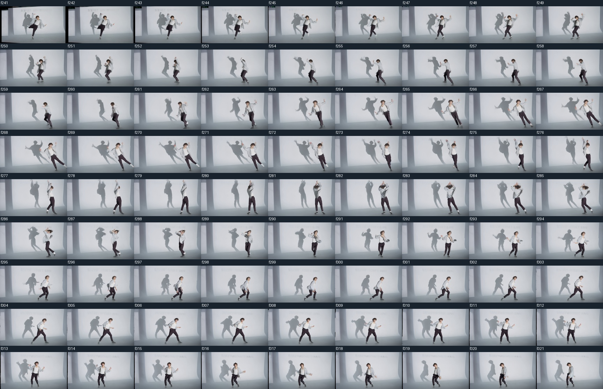 |
02DD81 场景修复 · 中段参考初始化仅中段两个失稳窗口使用已有近似目标视频参考来初始化 DD；首段与尾段保留原生完整噪声采样。 | 复杂舞蹈 场景崩坏已修复 · 人物与闪动待验收 帧检查与条件说明完整 f845–f1091 共247帧。按完整窗口采用初始化强度 [1,0.06,0.06,1]：首81帧与末6帧保留原原生DD结果，中段160帧采用已实际完成的参考初始化DD窗口。每窗81帧、50步/50次DD，CFG1、LoRA1，四窗共200次已有真实推理复用，本次不计新增模型采样。中段源视频、相机、首帧锚、源/相机特征和生成噪声均与失败对照相同，仅使用官方InputVideoEmbedder和对应RF去噪日程初始化；强度0.06实际首sigma约0.242。参考来自既有独立VideoX V52生成，为近似视频，不是真值。明确属于条件初始化修复，原始完整噪声基线仍保留失败。每窗使用自己的原生因果VAE解码，全部247帧原生RGB及源帧顺序核验；没有输出RGB混合、贴图、平滑或插帧。场景及大面积人物崩坏已消除，动作一致性、细节与闪动尚未通过完整验收。 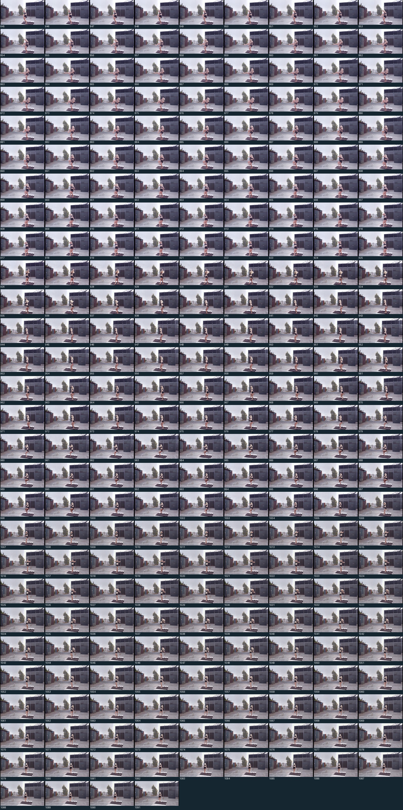 | 此项修复针对复杂案例后续窗口的场景崩坏。简单案例是单窗81帧，未改动；结果见上方原生 DD 基线。 查看原生 DD 基线 | 此项专门修复屋顶复杂例的中段失稳；新增hard案例先独立测试原生DD与参考初始化，不复用该case修复结果。 查看原生 DD 基线 |
03DD 修复协议 · 21帧窗DD 每次处理21帧，用源视频和深度相机条件生成目标视角，再按原窗口解码拼接。 | 复杂舞蹈 完整片段已生成 · 画质待验收 帧检查与条件说明使用同一份已核验DD采样结果，恢复每个原窗口自己的因果VAE上下文；完整原生RGB帧按源时间排列，仅去掉重复参考帧与EOF占位，不混合、不平滑、不插帧。没有新增DD采样，不重复计为新论文方法。沿用同一独立目标视频先验修复协议。画质、动作和剩余闪动仍待验收。 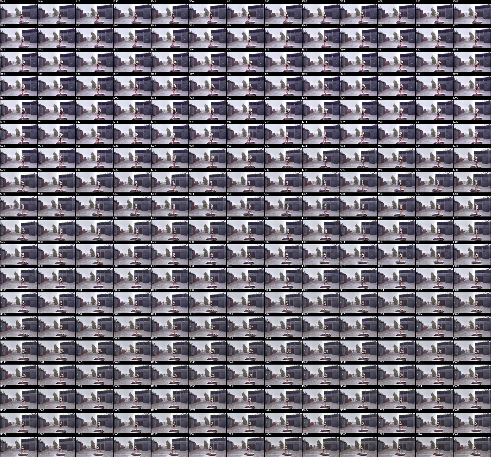 | 简单半身 完整片段已生成 · 画质待验收 帧检查与条件说明使用同一份已核验DD采样结果，恢复每个原窗口自己的因果VAE上下文；完整原生RGB帧按源时间排列，仅去掉重复参考帧与EOF占位，不混合、不平滑、不插帧。没有新增DD采样，不重复计为新论文方法。沿用固定DD81生成参考修复协议。画质、动作和剩余闪动仍待验收。  | 新增Hard案例 完整片段已生成 · 画质待验收 帧检查与条件说明独立新Hard：f241–f321至真实EOF，81帧@25fps；各方案共用同一已检查Stage2末帧和新case源条件。全81帧未见满屏彩噪或整段场景崩坏；细节、动作精度与窗接缝闪动待验收。 目标视频初始化使用独立DD81近似参考；短窗后续锚帧取其对应时刻。每窗源／相机特征与本窗起点配对。该生成参考不是动作或新视角真值。 未使用旧case视频。最终RGB未做拼贴、平滑、插帧或稳定化，仅作网页显示压缩。 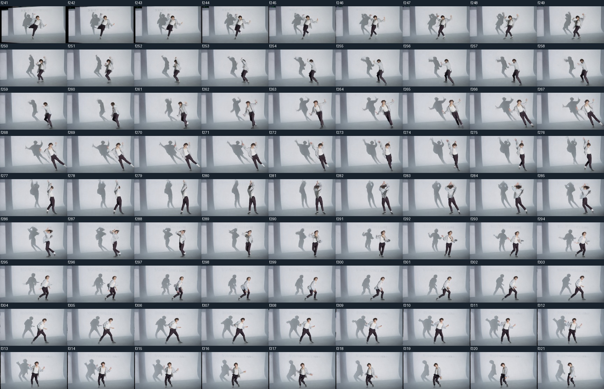 |
04DD 修复协议 · 41帧窗把 DD 的处理窗口扩至41帧，在同一窗口内保留更多时间上下文。 | 复杂舞蹈 完整片段已生成 · 画质待验收 帧检查与条件说明使用同一份已核验DD采样结果，恢复每个原窗口自己的因果VAE上下文；完整原生RGB帧按源时间排列，仅去掉重复参考帧与EOF占位，不混合、不平滑、不插帧。没有新增DD采样，不重复计为新论文方法。沿用同一独立目标视频先验修复协议。画质、动作和剩余闪动仍待验收。 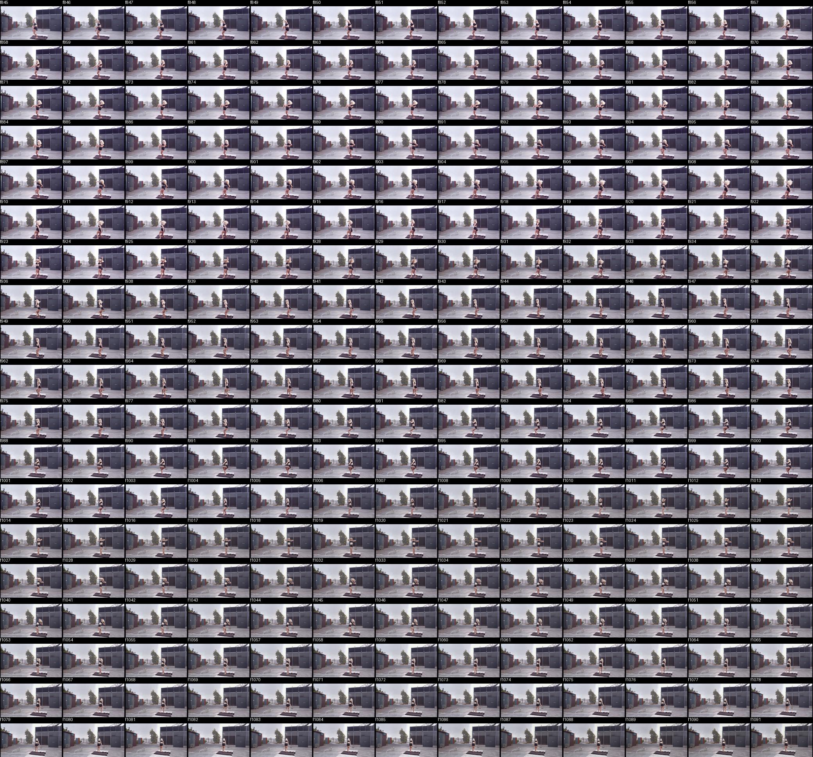 | 简单半身 完整片段已生成 · 画质待验收 帧检查与条件说明使用同一份已核验DD采样结果，恢复每个原窗口自己的因果VAE上下文；完整原生RGB帧按源时间排列，仅去掉重复参考帧与EOF占位，不混合、不平滑、不插帧。没有新增DD采样，不重复计为新论文方法。沿用固定DD81生成参考修复协议。画质、动作和剩余闪动仍待验收。  | 新增Hard案例 完整片段已生成 · 画质待验收 帧检查与条件说明独立新Hard：f241–f321至真实EOF，81帧@25fps；各方案共用同一已检查Stage2末帧和新case源条件。全81帧未见满屏彩噪或整段场景崩坏；细节、动作精度与窗接缝闪动待验收。 目标视频初始化使用独立DD81近似参考；短窗后续锚帧取其对应时刻。每窗源／相机特征与本窗起点配对。该生成参考不是动作或新视角真值。 未使用旧case视频。最终RGB未做拼贴、平滑、插帧或稳定化，仅作网页显示压缩。 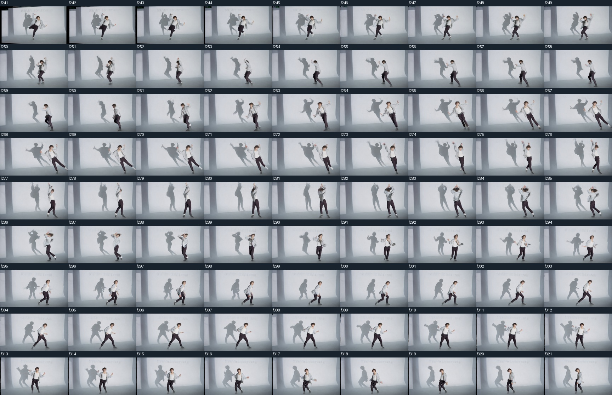 |
05DD + PAG · 引导1.0沿用同一目标注意力扰动，仅提高引导强度，与0.5版作参数对照。 论文 / 作者源码 ↗ | 复杂舞蹈 完整片段已生成 · 画质待验收 帧检查与条件说明完整源片段，保留每个 DD 窗口自己的原生因果 VAE 解码；只移除重叠参考帧与明确的 EOF 占位。首窗沿用原 Stage2，后续锚帧和源／相机条件与对应基线协议一致。DD 权重与 LoRA 保留，未平滑、插帧或替换输出像素。复杂案例通常为41帧窗固定当前参考协议，半身案例通常为原生81帧无整段参考；各项推理核验保留实际条件。 | 简单半身 完整片段已生成 · 画质待验收 帧检查与条件说明完整源片段，保留每个 DD 窗口自己的原生因果 VAE 解码；只移除重叠参考帧与明确的 EOF 占位。首窗沿用原 Stage2，后续锚帧和源／相机条件与对应基线协议一致。DD 权重与 LoRA 保留，未平滑、插帧或替换输出像素。复杂案例通常为41帧窗固定当前参考协议，半身案例通常为原生81帧无整段参考；各项推理核验保留实际条件。 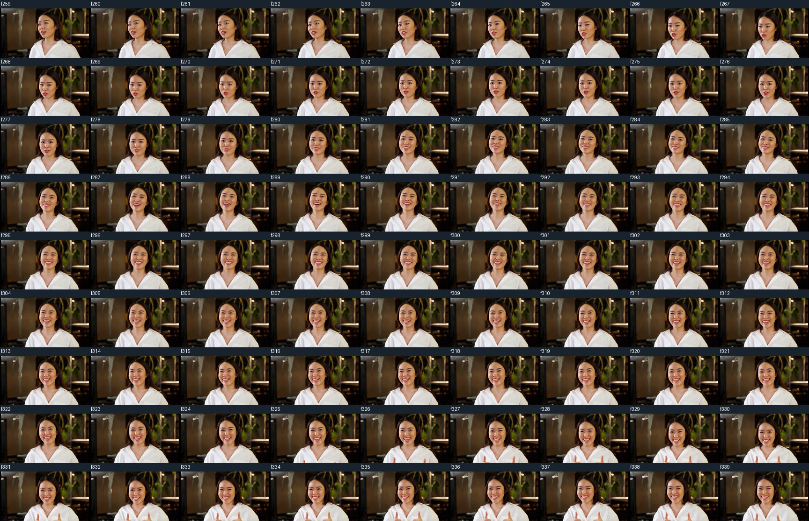 | 新增Hard案例 完整帧 / EOF 数据已核验 · 未逐帧视觉检查 帧检查与条件说明独立新Hard：f241–f321至真实EOF，81帧@25fps；各方案共用同一已检查Stage2末帧和新case源条件。此结果已完成完整81帧/EOF数据核验，尚未逐帧视觉检查；不代表彩噪、动作、肢体或闪动已通过。 目标视频初始化使用独立DD81近似参考；短窗后续锚帧取其对应时刻。每窗源／相机特征与本窗起点配对。该生成参考不是动作或新视角真值。 未使用旧case视频。最终RGB未做拼贴、平滑、插帧或稳定化，仅作网页显示压缩。 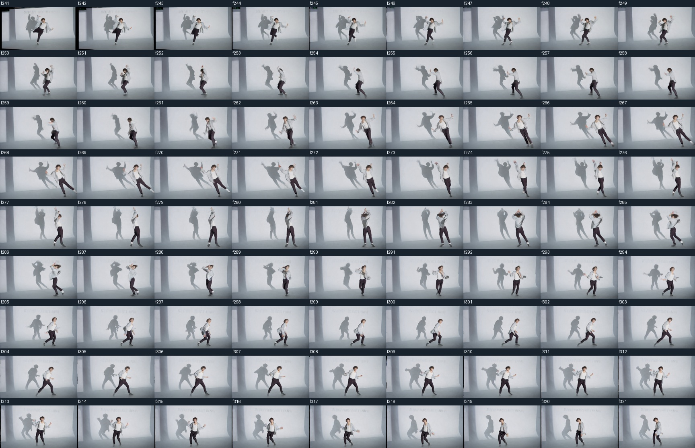 |
07DD + FrameInit · 去首帧信号对照保留相同的频域噪声处理，去掉首帧信号，定位变化来源。 论文 / 作者源码 ↗ | 复杂舞蹈 完整片段已生成 · 画质待验收 帧检查与条件说明完整源片段，保留每个 DD 窗口自己的原生因果 VAE 解码；只移除重叠参考帧与明确的 EOF 占位。首窗沿用原 Stage2，后续锚帧和源／相机条件与对应基线协议一致。DD 权重与 LoRA 保留，未平滑、插帧或替换输出像素。复杂案例通常为41帧窗固定当前参考协议，半身案例通常为原生81帧无整段参考；各项推理核验保留实际条件。 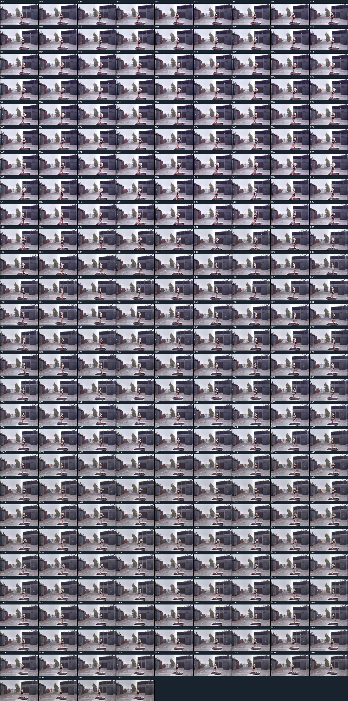 | 简单半身 完整片段已生成 · 画质待验收 帧检查与条件说明完整源片段，保留每个 DD 窗口自己的原生因果 VAE 解码；只移除重叠参考帧与明确的 EOF 占位。首窗沿用原 Stage2，后续锚帧和源／相机条件与对应基线协议一致。DD 权重与 LoRA 保留，未平滑、插帧或替换输出像素。复杂案例通常为41帧窗固定当前参考协议，半身案例通常为原生81帧无整段参考；各项推理核验保留实际条件。 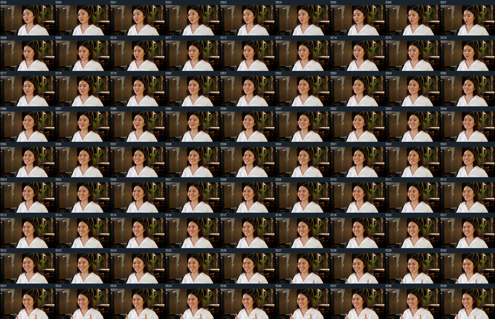 | 新增Hard案例 完整帧 / EOF 数据已核验 · 未逐帧视觉检查 帧检查与条件说明独立新Hard：f241–f321至真实EOF，81帧@25fps；各方案共用同一已检查Stage2末帧和新case源条件。此结果已完成完整81帧/EOF数据核验，尚未逐帧视觉检查；不代表彩噪、动作、肢体或闪动已通过。 本行不使用整段目标视频先验，是原生81帧噪声／引导对照。 未使用旧case视频。最终RGB未做拼贴、平滑、插帧或稳定化，仅作网页显示压缩。 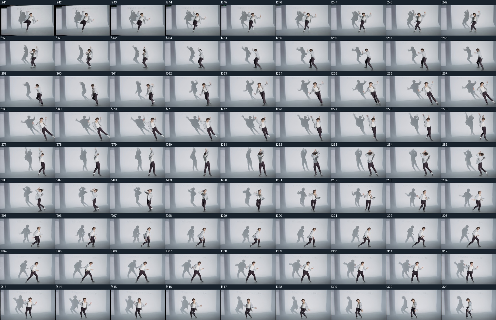 |
08DD + FrameInit · RF 适配把首帧的低频结构加入初始噪声，尝试稳定人物和布局。 论文 / 作者源码 ↗ | 复杂舞蹈 完整片段已生成 · 画质待验收 帧检查与条件说明完整源片段，保留每个 DD 窗口自己的原生因果 VAE 解码；只移除重叠参考帧与明确的 EOF 占位。首窗沿用原 Stage2，后续锚帧和源／相机条件与对应基线协议一致。DD 权重与 LoRA 保留，未平滑、插帧或替换输出像素。复杂案例通常为41帧窗固定当前参考协议，半身案例通常为原生81帧无整段参考；各项推理核验保留实际条件。 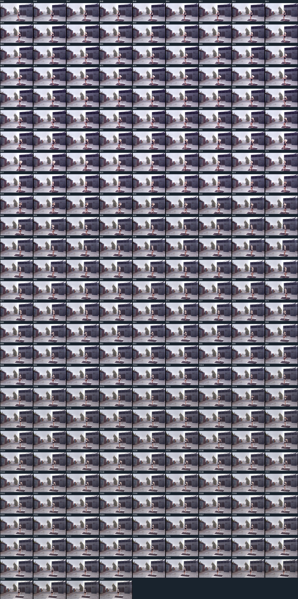 | 简单半身 画质未通过：首帧之后明显偏橙、过曝，脸部与衣服细节变糊 清晰版 · 推理核验 · 查看首帧低频强度修复对照 帧检查与条件说明完整源片段，保留每个 DD 窗口自己的原生因果 VAE 解码；只移除重叠参考帧与明确的 EOF 占位。首窗沿用原 Stage2，后续锚帧和源／相机条件与对应基线协议一致。DD 权重与 LoRA 保留，未平滑、插帧或替换输出像素。复杂案例通常为41帧窗固定当前参考协议，半身案例通常为原生81帧无整段参考；各项推理核验保留实际条件。 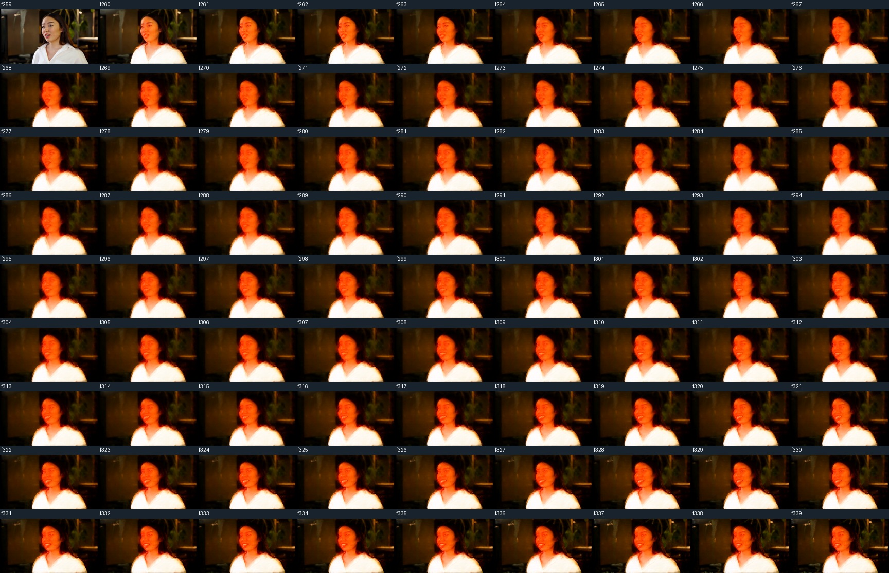 | 新增Hard案例 完整帧 / EOF 数据已核验 · 未逐帧视觉检查 帧检查与条件说明独立新Hard：f241–f321至真实EOF，81帧@25fps；各方案共用同一已检查Stage2末帧和新case源条件。此结果已完成完整81帧/EOF数据核验，尚未逐帧视觉检查；不代表彩噪、动作、肢体或闪动已通过。 本行不使用整段目标视频先验，是原生81帧噪声／引导对照。 未使用旧case视频。最终RGB未做拼贴、平滑、插帧或稳定化，仅作网页显示压缩。 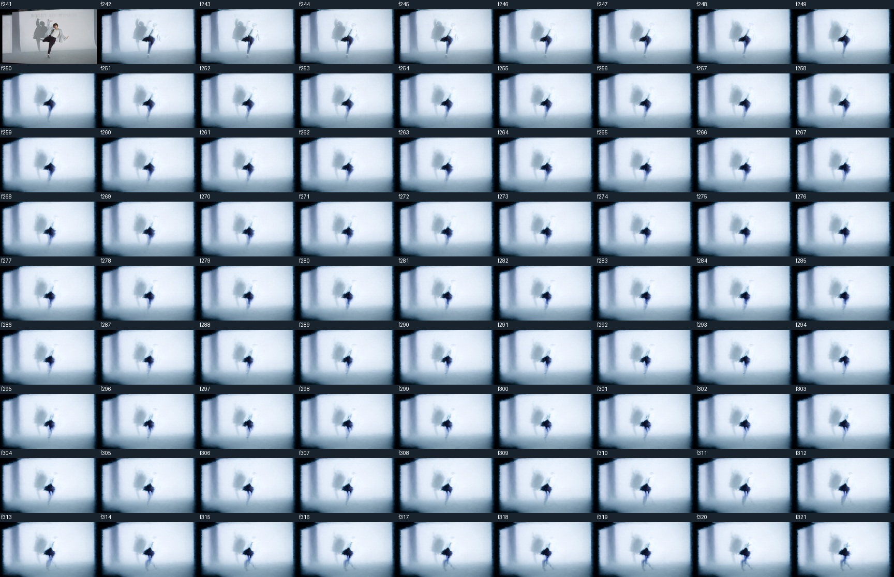 |
09DD + TST · 公开代码对照按作者当前公开代码缩放时序注意力输出，与论文的查询温度版本分别测试。 论文 / 作者源码 ↗ | 复杂舞蹈 完整片段已生成 · 画质待验收 帧检查与条件说明完整源片段，保留每个 DD 窗口自己的原生因果 VAE 解码；只移除重叠参考帧与明确的 EOF 占位。首窗沿用原 Stage2，后续锚帧和源／相机条件与对应基线协议一致。DD 权重与 LoRA 保留，未平滑、插帧或替换输出像素。复杂案例通常为41帧窗固定当前参考协议，半身案例通常为原生81帧无整段参考；各项推理核验保留实际条件。 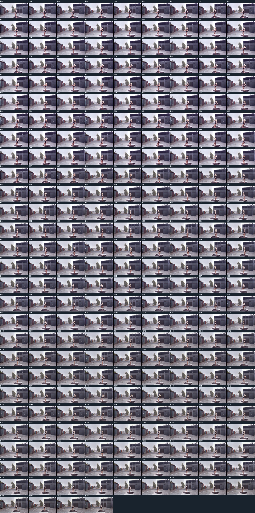 | 简单半身 完整片段已生成 · 画质待验收 帧检查与条件说明完整源片段，保留每个 DD 窗口自己的原生因果 VAE 解码；只移除重叠参考帧与明确的 EOF 占位。首窗沿用原 Stage2，后续锚帧和源／相机条件与对应基线协议一致。DD 权重与 LoRA 保留，未平滑、插帧或替换输出像素。复杂案例通常为41帧窗固定当前参考协议，半身案例通常为原生81帧无整段参考；各项推理核验保留实际条件。 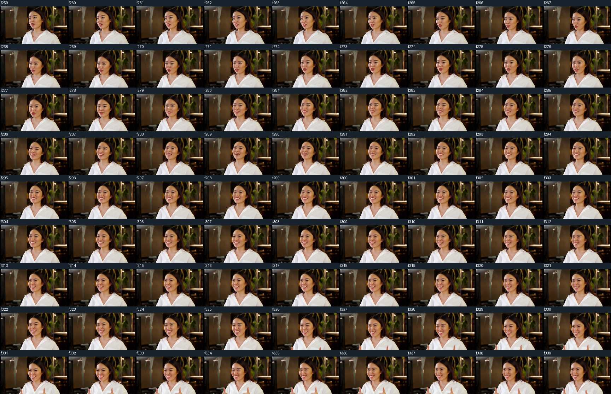 | 新增Hard案例 完整帧 / EOF 数据已核验 · 未逐帧视觉检查 帧检查与条件说明独立新Hard：f241–f321至真实EOF，81帧@25fps；各方案共用同一已检查Stage2末帧和新case源条件。此结果已完成完整81帧/EOF数据核验，尚未逐帧视觉检查；不代表彩噪、动作、肢体或闪动已通过。 目标视频初始化使用独立DD81近似参考；短窗后续锚帧取其对应时刻。每窗源／相机特征与本窗起点配对。该生成参考不是动作或新视角真值。 未使用旧case视频。最终RGB未做拼贴、平滑、插帧或稳定化，仅作网页显示压缩。 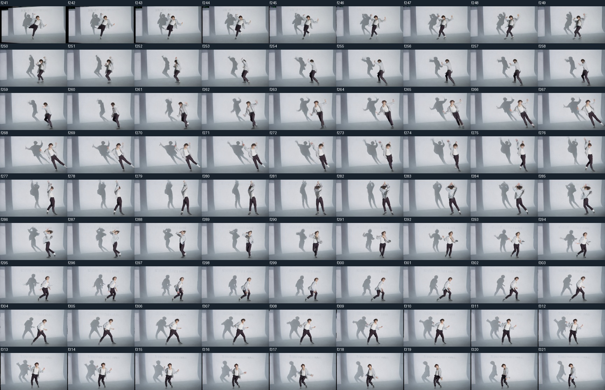 |
10DD + TST · 论文查询温度根据跨帧注意力的分散程度调整查询强度，尝试减少时序不稳定。 论文 / 作者源码 ↗ | 复杂舞蹈 完整片段已生成 · 画质待验收 帧检查与条件说明完整源片段，保留每个 DD 窗口自己的原生因果 VAE 解码；只移除重叠参考帧与明确的 EOF 占位。首窗沿用原 Stage2，后续锚帧和源／相机条件与对应基线协议一致。DD 权重与 LoRA 保留，未平滑、插帧或替换输出像素。复杂案例通常为41帧窗固定当前参考协议，半身案例通常为原生81帧无整段参考；各项推理核验保留实际条件。 | 简单半身 完整片段已生成 · 画质待验收 帧检查与条件说明完整源片段，保留每个 DD 窗口自己的原生因果 VAE 解码；只移除重叠参考帧与明确的 EOF 占位。首窗沿用原 Stage2，后续锚帧和源／相机条件与对应基线协议一致。DD 权重与 LoRA 保留，未平滑、插帧或替换输出像素。复杂案例通常为41帧窗固定当前参考协议，半身案例通常为原生81帧无整段参考；各项推理核验保留实际条件。 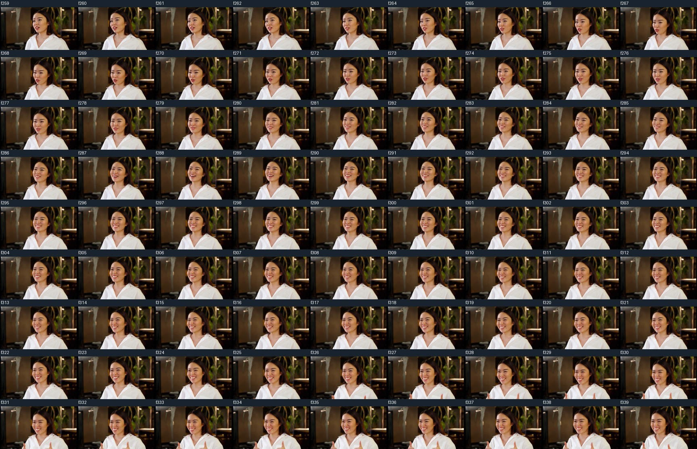 | 新增Hard案例 完整片段已生成 · 画质待验收 帧检查与条件说明独立新Hard：f241–f321至真实EOF，81帧@25fps；各方案共用同一已检查Stage2末帧和新case源条件。全81帧未见满屏彩噪或场景崩坏；与同条件DD41整体相近，尚未确认动作或闪动改善。 目标视频初始化使用独立DD81近似参考；短窗后续锚帧取其对应时刻。每窗源／相机特征与本窗起点配对。该生成参考不是动作或新视角真值。 未使用旧case视频。最终RGB未做拼贴、平滑、插帧或稳定化，仅作网页显示压缩。 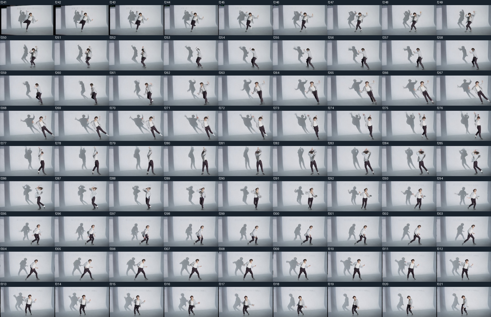 |
11DD + PAG · 目标注意力引导0.5比较正常预测与注意力被扰动的预测，用二者差异引导 DD，尝试强化结构。 论文 / 作者源码 ↗ | 复杂舞蹈 完整片段已生成 · 画质待验收 帧检查与条件说明完整源片段，保留每个 DD 窗口自己的原生因果 VAE 解码；只移除重叠参考帧与明确的 EOF 占位。首窗沿用原 Stage2，后续锚帧和源／相机条件与对应基线协议一致。DD 权重与 LoRA 保留，未平滑、插帧或替换输出像素。复杂案例通常为41帧窗固定当前参考协议，半身案例通常为原生81帧无整段参考；各项推理核验保留实际条件。 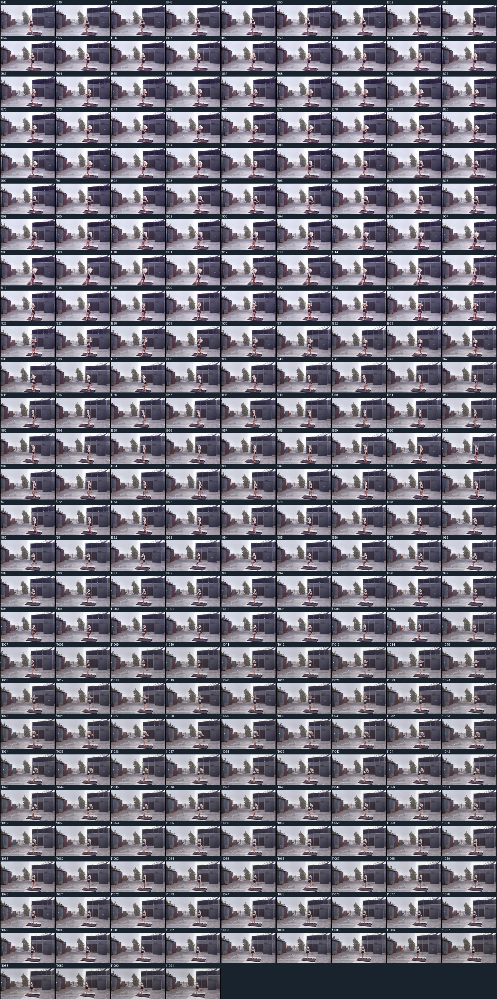 | 简单半身 完整片段已生成 · 画质待验收 帧检查与条件说明完整源片段，保留每个 DD 窗口自己的原生因果 VAE 解码；只移除重叠参考帧与明确的 EOF 占位。首窗沿用原 Stage2，后续锚帧和源／相机条件与对应基线协议一致。DD 权重与 LoRA 保留，未平滑、插帧或替换输出像素。复杂案例通常为41帧窗固定当前参考协议，半身案例通常为原生81帧无整段参考；各项推理核验保留实际条件。 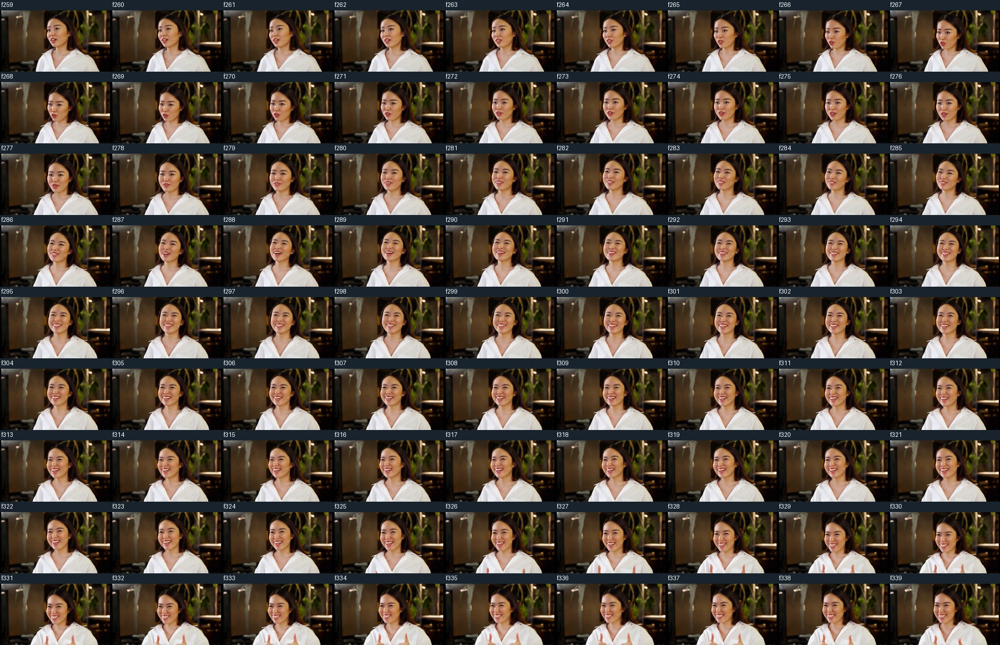 | 新增Hard案例 完整帧 / EOF 数据已核验 · 未逐帧视觉检查 帧检查与条件说明独立新Hard：f241–f321至真实EOF，81帧@25fps；各方案共用同一已检查Stage2末帧和新case源条件。此结果已完成完整81帧/EOF数据核验，尚未逐帧视觉检查；不代表彩噪、动作、肢体或闪动已通过。 目标视频初始化使用独立DD81近似参考；短窗后续锚帧取其对应时刻。每窗源／相机特征与本窗起点配对。该生成参考不是动作或新视角真值。 未使用旧case视频。最终RGB未做拼贴、平滑、插帧或稳定化，仅作网页显示压缩。 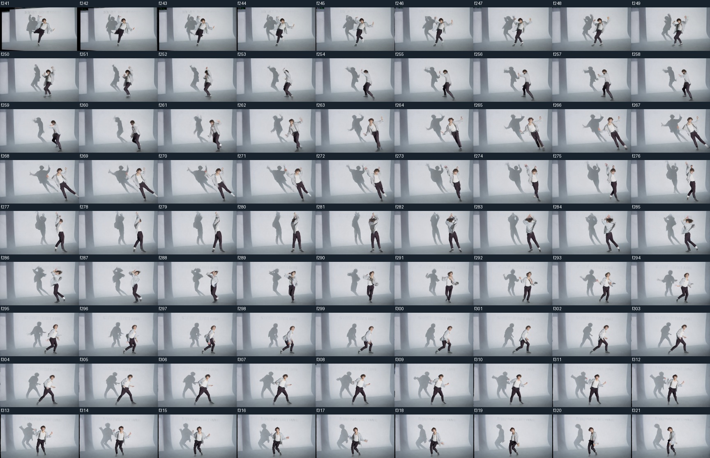 |
13DD + FreSca在 DD 的速度预测中轻微提高空间高频分量，观察细节与稳定性的变化。 论文 / 作者源码 ↗ | 复杂舞蹈 完整片段已生成 · 画质待验收 背景帧间变化较同条件基线 +0.5%；尚未证明闪动改善。 帧检查与条件说明与现有 DD41 使用相同原 Stage2 +45°、源视频、相机、初始噪声及固定当前时刻 VideoX 先验0.06。作者空间 frequency_filter 适配到 DD 速度预测，高频×1.05、低频×1；7窗各50次 DD 推理，共350次。每窗独立原生因果 VAE 解码后仅按时间拼接完整 RGB 帧。 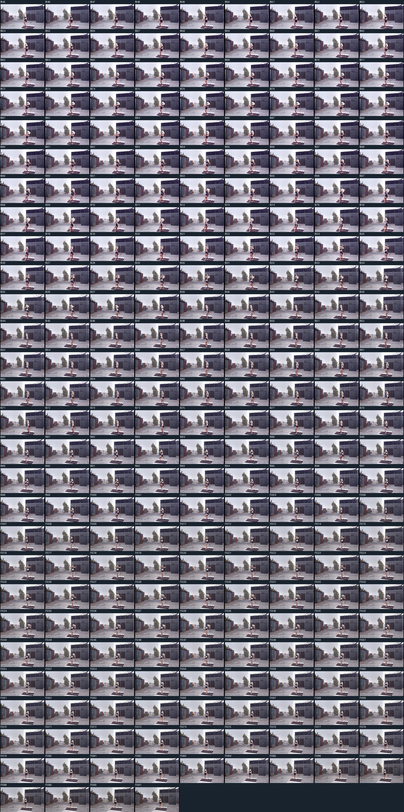 | 简单半身 完整片段已生成 · 画质待验收 帧检查与条件说明作者空间频率过滤组件适配到 DD 的条件速度预测，CFG1，低频×1、高频×1.05，自适应阈值0.5。50次实际 DD 推理；保留相机、源视频、初始噪声及首帧。采用作者 frequency_filter，不是论文的 CFG 差值管线。 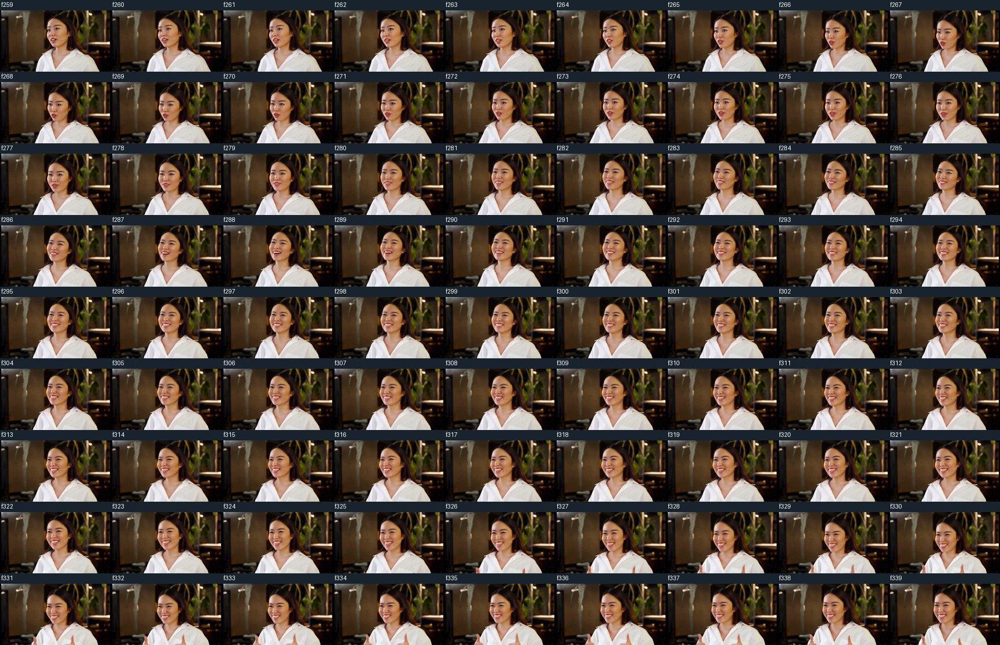 | 新增Hard案例 完整帧 / EOF 数据已核验 · 未逐帧视觉检查 帧检查与条件说明独立新Hard：f241–f321至真实EOF，81帧@25fps；各方案共用同一已检查Stage2末帧和新case源条件。此结果已完成完整81帧/EOF数据核验，尚未逐帧视觉检查；不代表彩噪、动作、肢体或闪动已通过。 目标视频初始化使用独立DD81近似参考；短窗后续锚帧取其对应时刻。每窗源／相机特征与本窗起点配对。该生成参考不是动作或新视角真值。 未使用旧case视频。最终RGB未做拼贴、平滑、插帧或稳定化，仅作网页显示压缩。 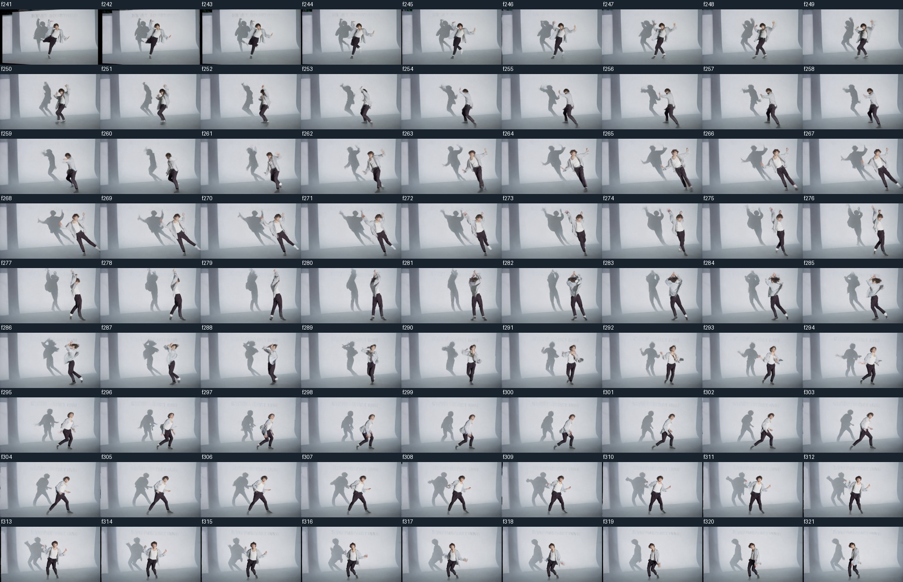 |
14DD + FreeInit · RF 适配将已有 DD latent 的低频与新噪声的高频组合，再按实际 RF sigma 重启采样。 论文 / 作者源码 ↗ | 复杂舞蹈 完整片段已生成 · 画质待验收 帧检查与条件说明完整源片段，保留每个 DD 窗口自己的原生因果 VAE 解码；只移除重叠参考帧与明确的 EOF 占位。首窗沿用原 Stage2，后续锚帧和源／相机条件与对应基线协议一致。DD 权重与 LoRA 保留，未平滑、插帧或替换输出像素。复杂案例通常为41帧窗固定当前参考协议，半身案例通常为原生81帧无整段参考；各项推理核验保留实际条件。 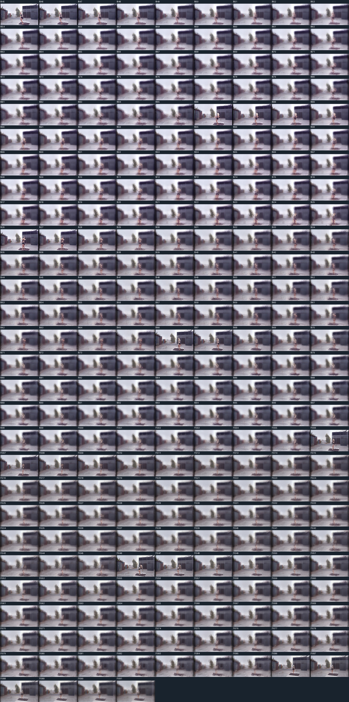 | 简单半身 画质未通过：全片脸部及衣服细节明显变糊，画质未通过 帧检查与条件说明作者频域混合组件适配到 DD 的中间 sigma 重启；新高频噪声按实际 RF sigma 缩放。使用同一 DD 已生成的原生 latent，保留 Stage2、源视频、相机与权重。额外50次 DD 推理，含初轮共100次；不是原始 DDPM 管线复现。 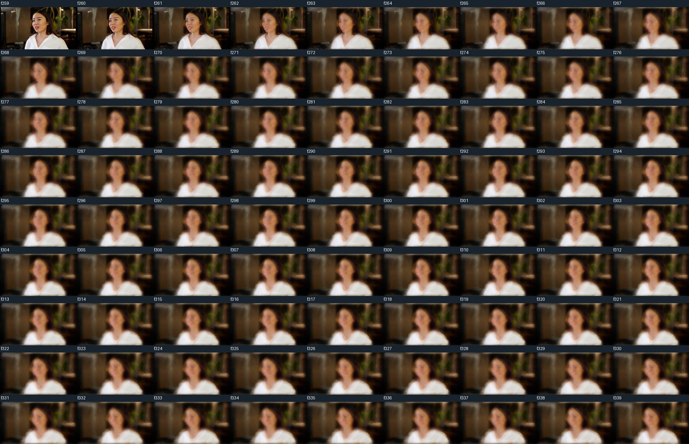 | 新增Hard案例 完整帧 / EOF 数据已核验 · 未逐帧视觉检查 帧检查与条件说明独立新Hard：f241–f321至真实EOF，81帧@25fps；各方案共用同一已检查Stage2末帧和新case源条件。此结果已完成完整81帧/EOF数据核验，尚未逐帧视觉检查；不代表彩噪、动作、肢体或闪动已通过。 从对应DD基线最终潜变量重启；不重复混入目标视频先验。 未使用旧case视频。最终RGB未做拼贴、平滑、插帧或稳定化，仅作网页显示压缩。 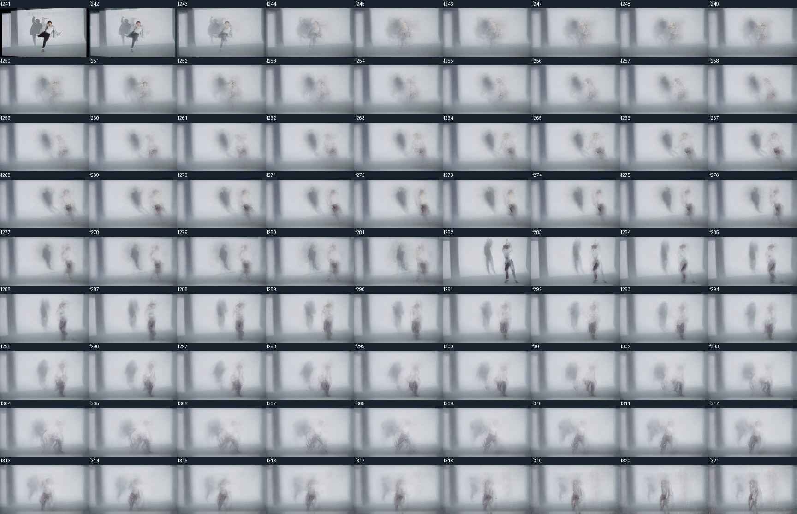 |
15DD 普通重启 · FreeInit 匹配对照使用相同 DD latent、噪声和重启日程，关闭频域混合，用于定位变化来自哪一部分。 论文 / 作者源码 ↗ | 复杂舞蹈 完整片段已生成 · 画质待验收 帧检查与条件说明完整源片段，保留每个 DD 窗口自己的原生因果 VAE 解码；只移除重叠参考帧与明确的 EOF 占位。首窗沿用原 Stage2，后续锚帧和源／相机条件与对应基线协议一致。DD 权重与 LoRA 保留，未平滑、插帧或替换输出像素。复杂案例通常为41帧窗固定当前参考协议，半身案例通常为原生81帧无整段参考；各项推理核验保留实际条件。 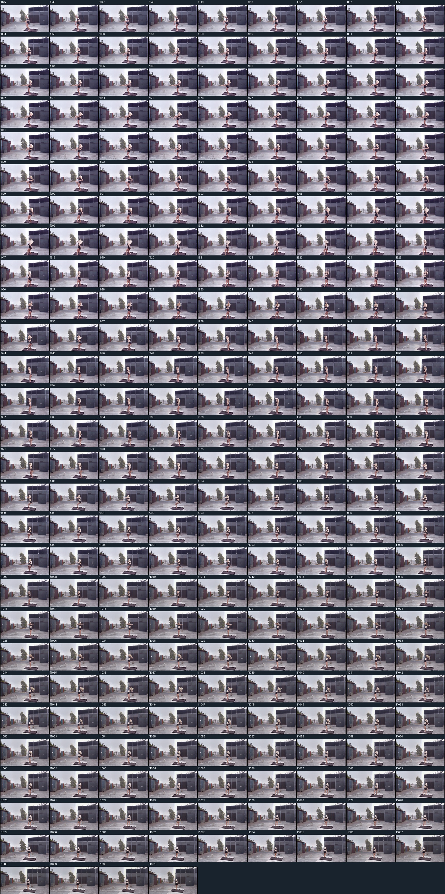 | 简单半身 完整片段已生成 · 画质待验收 帧检查与条件说明与 FreeInit 使用同一已生成 latent、相同初始噪声及 sigma 日程，关闭频域混合。用于区分普通重启与频域初始化的影响，不计作另一项论文方法。 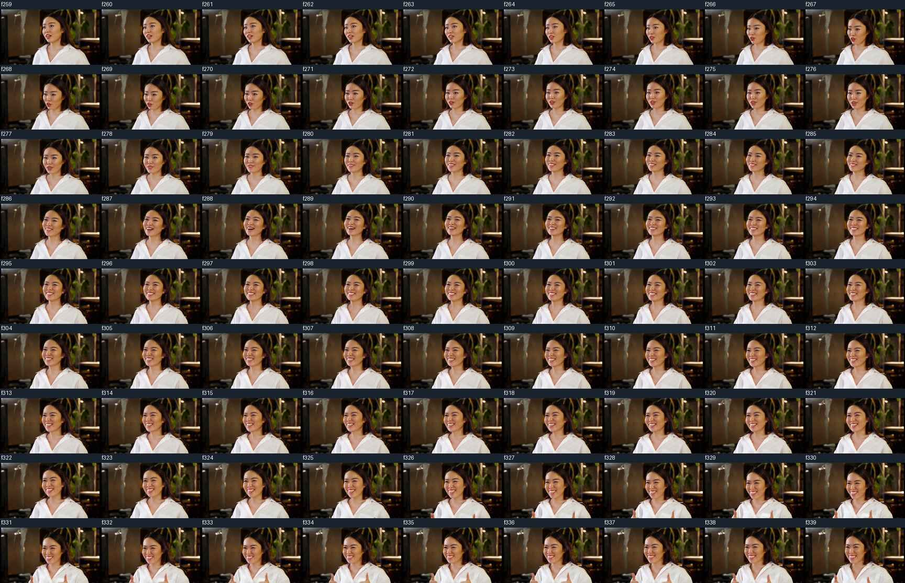 | 新增Hard案例 完整帧 / EOF 数据已核验 · 未逐帧视觉检查 帧检查与条件说明独立新Hard：f241–f321至真实EOF，81帧@25fps；各方案共用同一已检查Stage2末帧和新case源条件。此结果已完成完整81帧/EOF数据核验，尚未逐帧视觉检查；不代表彩噪、动作、肢体或闪动已通过。 从对应DD基线最终潜变量重启；不重复混入目标视频先验。 未使用旧case视频。最终RGB未做拼贴、平滑、插帧或稳定化，仅作网页显示压缩。 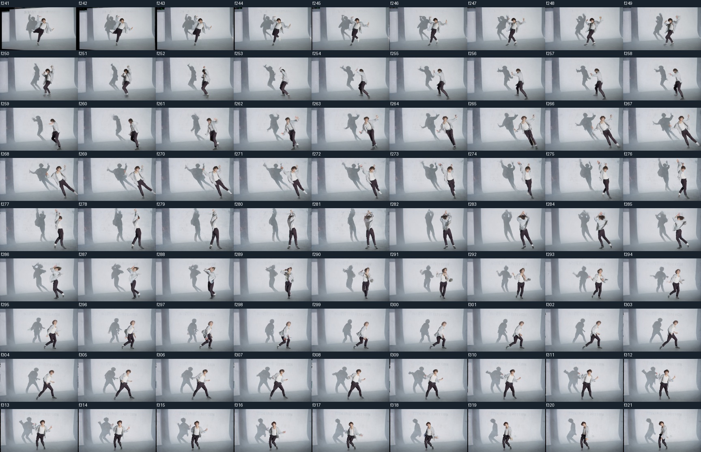 |
16Wan-Move 官方轨迹函数 α0.35 · 21 帧窗将追踪到的运动轨迹传播到 DD 条件特征，帮助模型保持动作对应关系。 | 复杂舞蹈 完整片段已生成 · 画质待验收 帧检查与条件说明使用同一份已核验DD采样结果，恢复每个原窗口自己的因果VAE上下文；完整原生RGB帧按源时间排列，仅去掉重复参考帧与EOF占位，不混合、不平滑、不插帧。没有新增DD采样，不重复计为新论文方法。沿用同一独立目标视频先验修复协议。画质、动作和剩余闪动仍待验收。 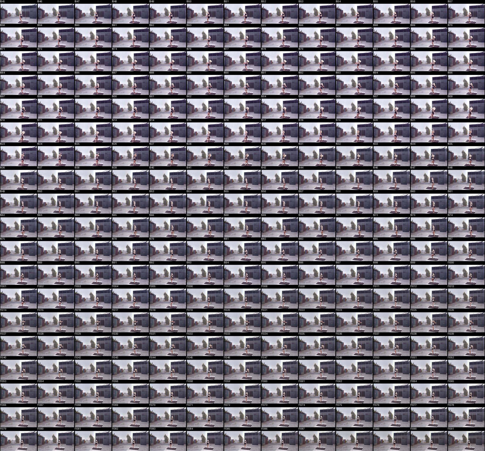 | 简单半身 完整片段已生成 · 画质待验收 帧检查与条件说明使用同一份已核验DD采样结果，恢复每个原窗口自己的因果VAE上下文；完整原生RGB帧按源时间排列，仅去掉重复参考帧与EOF占位，不混合、不平滑、不插帧。没有新增DD采样，不重复计为新论文方法。沿用固定DD81生成参考修复协议。画质、动作和剩余闪动仍待验收。  | 新增Hard案例 完整帧 / EOF 数据已核验 · 未逐帧视觉检查 帧检查与条件说明独立新Hard：f241–f321至真实EOF，81帧@25fps；各方案共用同一已检查Stage2末帧和新case源条件。此结果已完成完整81帧/EOF数据核验，尚未逐帧视觉检查；不代表彩噪、动作、肢体或闪动已通过。 目标视频初始化使用独立DD81近似参考；短窗后续锚帧取其对应时刻。每窗源／相机特征与本窗起点配对。该生成参考不是动作或新视角真值。 未使用旧case视频。最终RGB未做拼贴、平滑、插帧或稳定化，仅作网页显示压缩。 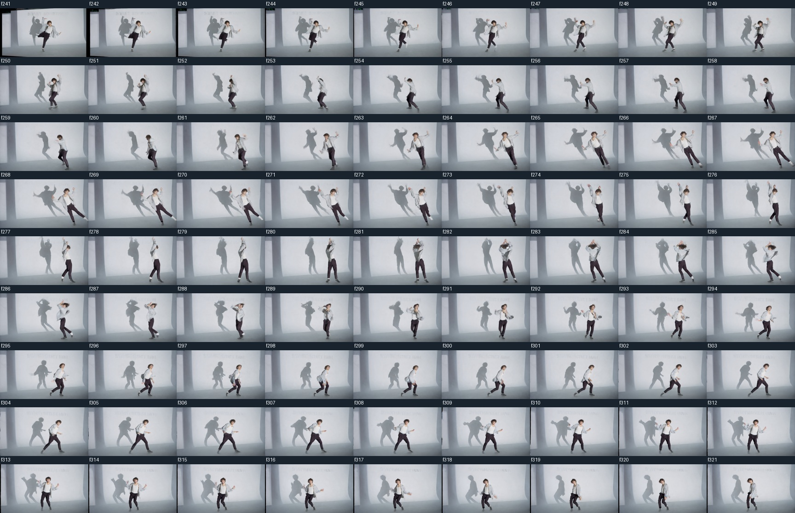 |
17Wan-Move α0.1 · 21 帧窗将追踪到的运动轨迹传播到 DD 条件特征，帮助模型保持动作对应关系。 | 复杂舞蹈 完整片段已生成 · 画质待验收 帧检查与条件说明使用同一份已核验DD采样结果，恢复每个原窗口自己的因果VAE上下文；完整原生RGB帧按源时间排列，仅去掉重复参考帧与EOF占位，不混合、不平滑、不插帧。没有新增DD采样，不重复计为新论文方法。沿用同一独立目标视频先验修复协议。画质、动作和剩余闪动仍待验收。 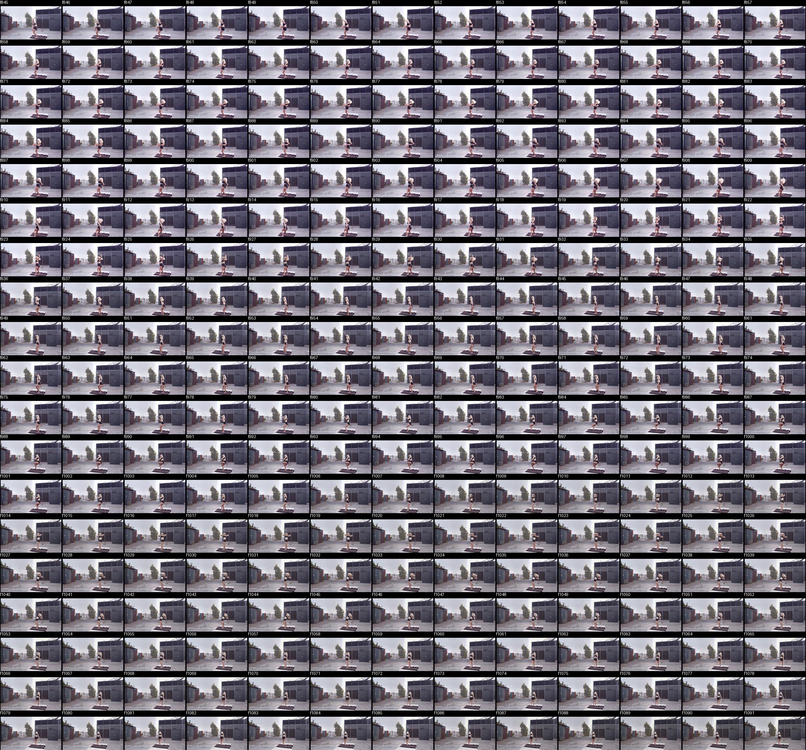 | 简单半身 完整片段已生成 · 画质待验收 帧检查与条件说明使用同一份已核验DD采样结果，恢复每个原窗口自己的因果VAE上下文；完整原生RGB帧按源时间排列，仅去掉重复参考帧与EOF占位，不混合、不平滑、不插帧。没有新增DD采样，不重复计为新论文方法。沿用固定DD81生成参考修复协议。画质、动作和剩余闪动仍待验收。 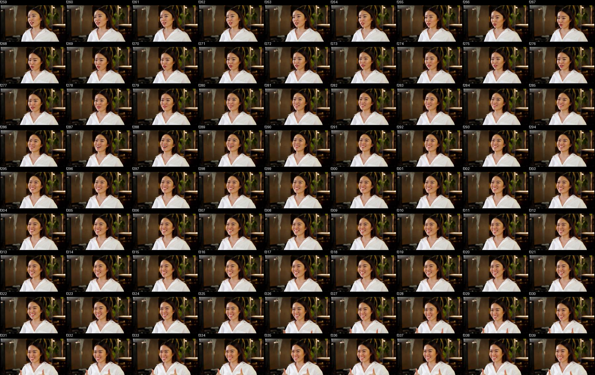 | 新增Hard案例 完整帧 / EOF 数据已核验 · 未逐帧视觉检查 帧检查与条件说明独立新Hard：f241–f321至真实EOF，81帧@25fps；各方案共用同一已检查Stage2末帧和新case源条件。此结果已完成完整81帧/EOF数据核验，尚未逐帧视觉检查；不代表彩噪、动作、肢体或闪动已通过。 目标视频初始化使用独立DD81近似参考；短窗后续锚帧取其对应时刻。每窗源／相机特征与本窗起点配对。该生成参考不是动作或新视角真值。 未使用旧case视频。最终RGB未做拼贴、平滑、插帧或稳定化，仅作网页显示压缩。 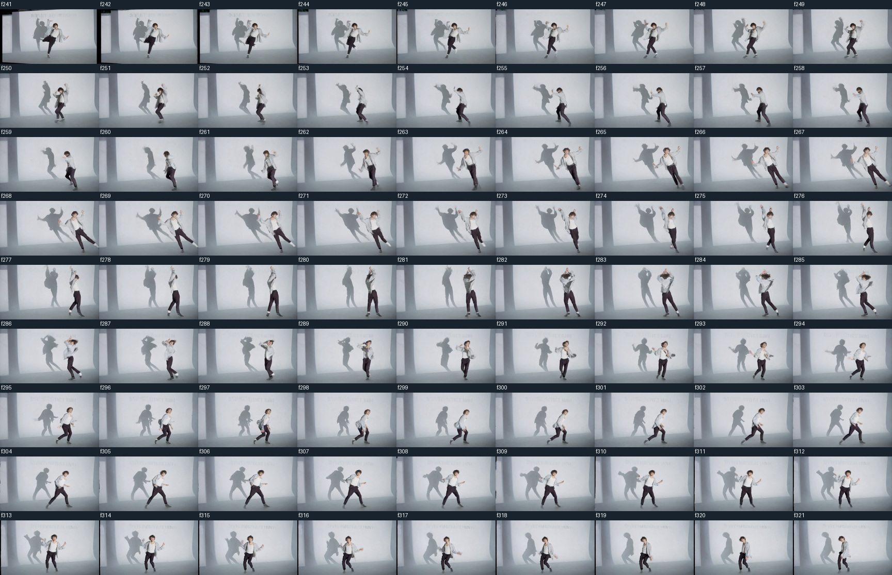 |
18Motion-I2V ForwardWarp α0.35 · 21 帧窗通过前向投影传播源视频的运动信息，再交给 DD 生成目标视角。 | 复杂舞蹈 完整片段已生成 · 画质待验收 帧检查与条件说明使用同一份已核验DD采样结果，恢复每个原窗口自己的因果VAE上下文；完整原生RGB帧按源时间排列，仅去掉重复参考帧与EOF占位，不混合、不平滑、不插帧。没有新增DD采样，不重复计为新论文方法。沿用同一独立目标视频先验修复协议。画质、动作和剩余闪动仍待验收。 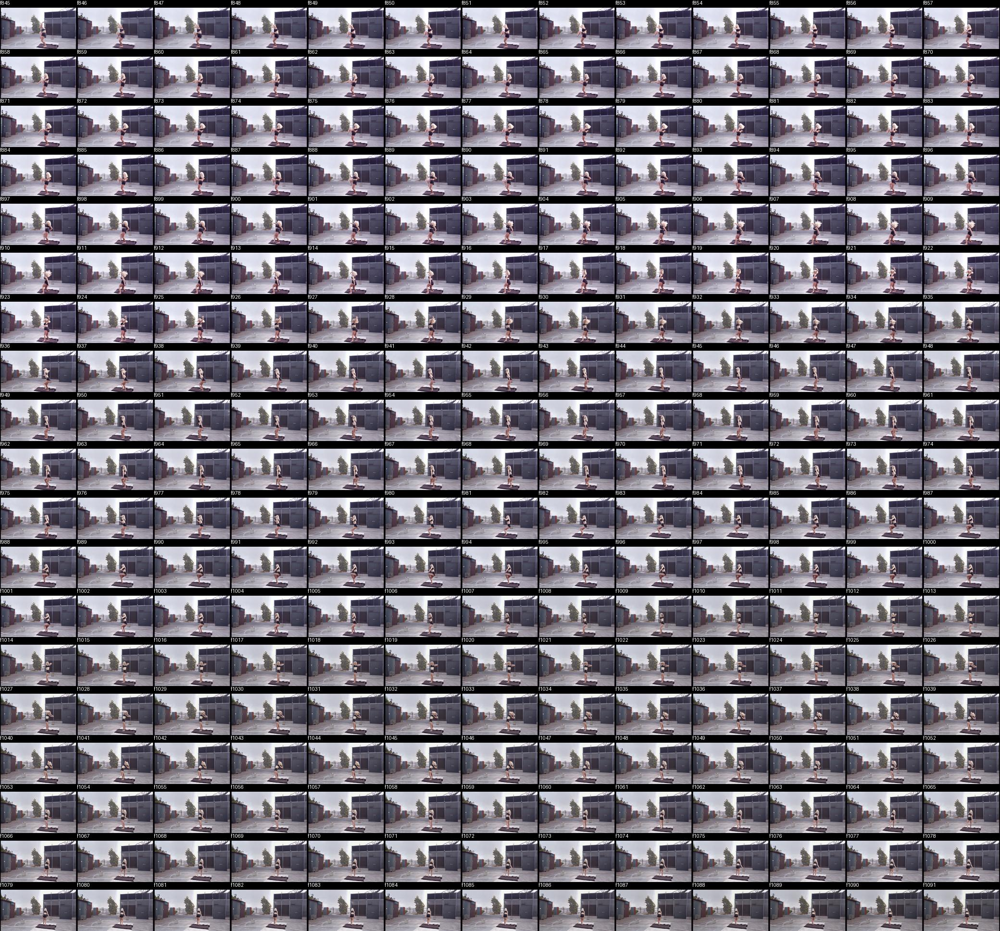 | 简单半身 完整片段已生成 · 画质待验收 帧检查与条件说明使用同一份已核验DD采样结果，恢复每个原窗口自己的因果VAE上下文；完整原生RGB帧按源时间排列，仅去掉重复参考帧与EOF占位，不混合、不平滑、不插帧。没有新增DD采样，不重复计为新论文方法。沿用固定DD81生成参考修复协议。画质、动作和剩余闪动仍待验收。  | 新增Hard案例 完整帧 / EOF 数据已核验 · 未逐帧视觉检查 帧检查与条件说明独立新Hard：f241–f321至真实EOF，81帧@25fps；各方案共用同一已检查Stage2末帧和新case源条件。此结果已完成完整81帧/EOF数据核验，尚未逐帧视觉检查；不代表彩噪、动作、肢体或闪动已通过。 目标视频初始化使用独立DD81近似参考；短窗后续锚帧取其对应时刻。每窗源／相机特征与本窗起点配对。该生成参考不是动作或新视角真值。 未使用旧case视频。最终RGB未做拼贴、平滑、插帧或稳定化，仅作网页显示压缩。 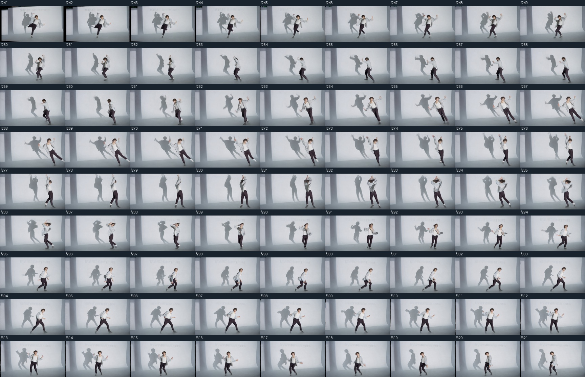 |
19Wan-Move α0.35 · 41 帧窗将追踪到的运动轨迹传播到 DD 条件特征，帮助模型保持动作对应关系。 | 复杂舞蹈 完整片段已生成 · 画质待验收 帧检查与条件说明使用同一份已核验DD采样结果，恢复每个原窗口自己的因果VAE上下文；完整原生RGB帧按源时间排列，仅去掉重复参考帧与EOF占位，不混合、不平滑、不插帧。没有新增DD采样，不重复计为新论文方法。沿用同一独立目标视频先验修复协议。画质、动作和剩余闪动仍待验收。  | 简单半身 完整片段已生成 · 画质待验收 帧检查与条件说明使用同一份已核验DD采样结果，恢复每个原窗口自己的因果VAE上下文；完整原生RGB帧按源时间排列，仅去掉重复参考帧与EOF占位，不混合、不平滑、不插帧。没有新增DD采样，不重复计为新论文方法。沿用固定DD81生成参考修复协议。画质、动作和剩余闪动仍待验收。 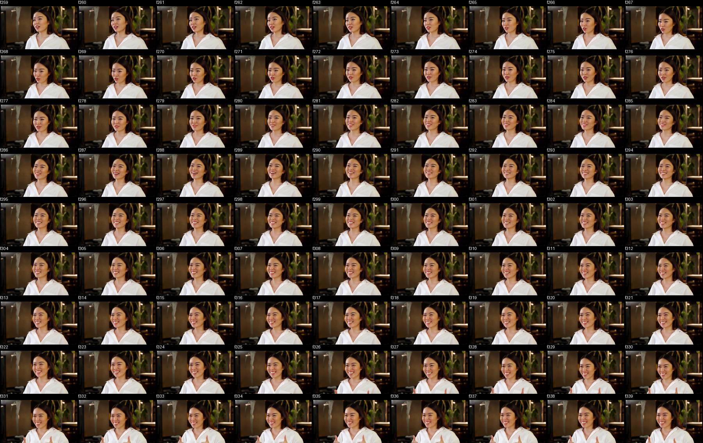 | 新增Hard案例 完整片段已生成 · 画质待验收 帧检查与条件说明独立新Hard：f241–f321至真实EOF，81帧@25fps；各方案共用同一已检查Stage2末帧和新case源条件。全部81帧及EOF保持人物／影子／墙面，无普遍彩噪或全场景崩坏。动作总体顺序保留，但与匹配DD41基线视觉接近，未证明改善手脚细节或背景闪动。轨迹来自真实原片，迁移的是WanMove推理组件，未加载训练好的WanMove模型。 目标视频初始化使用独立DD81近似参考；短窗后续锚帧取其对应时刻。每窗源／相机特征与本窗起点配对。该生成参考不是动作或新视角真值。 未使用旧case视频。最终RGB未做拼贴、平滑、插帧或稳定化，仅作网页显示压缩。 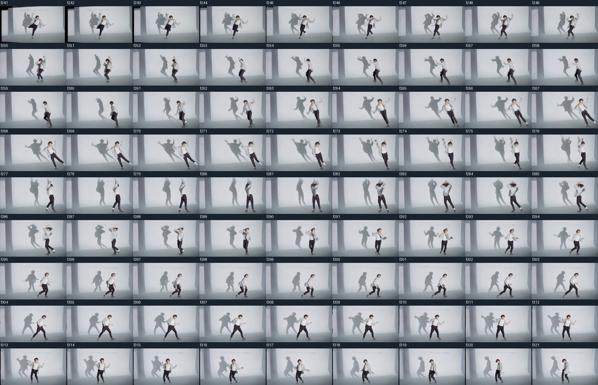 |
20Wan-Move α0.1 · 41 帧窗将追踪到的运动轨迹传播到 DD 条件特征，帮助模型保持动作对应关系。 | 复杂舞蹈 完整片段已生成 · 画质待验收 帧检查与条件说明使用同一份已核验DD采样结果，恢复每个原窗口自己的因果VAE上下文；完整原生RGB帧按源时间排列，仅去掉重复参考帧与EOF占位，不混合、不平滑、不插帧。没有新增DD采样，不重复计为新论文方法。沿用同一独立目标视频先验修复协议。画质、动作和剩余闪动仍待验收。 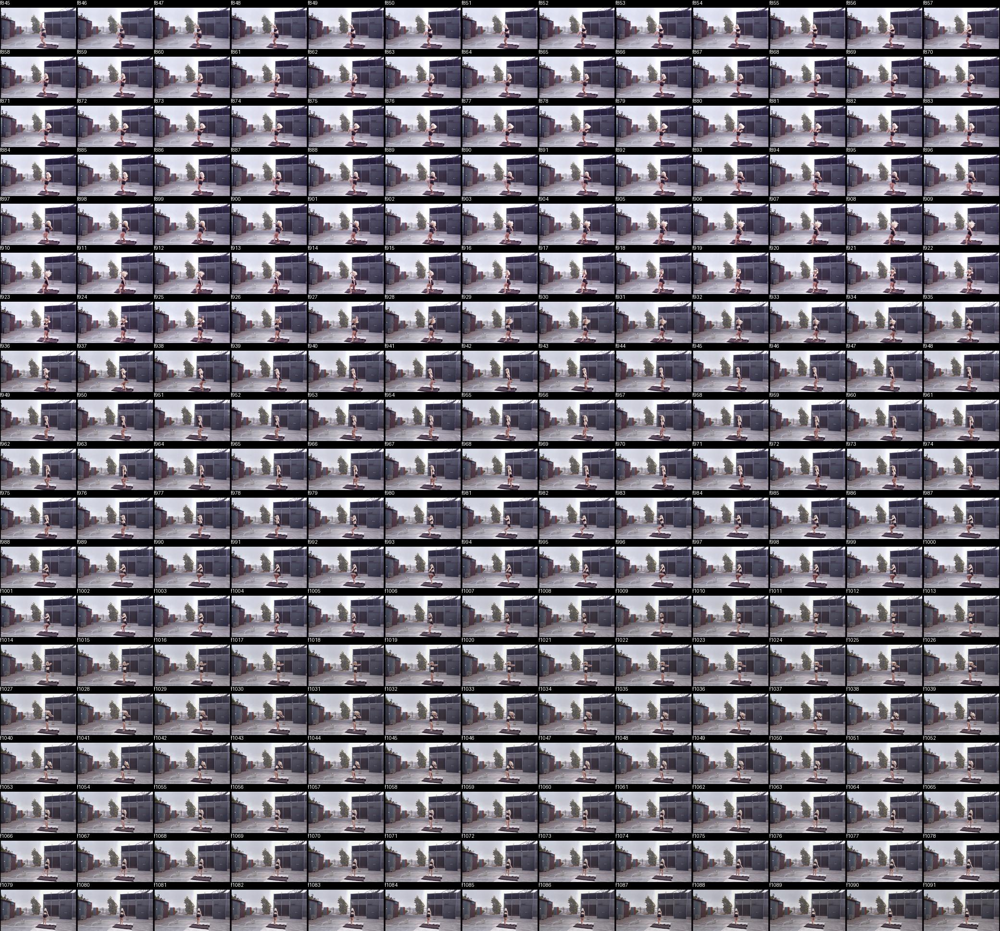 | 简单半身 完整片段已生成 · 画质待验收 帧检查与条件说明使用同一份已核验DD采样结果，恢复每个原窗口自己的因果VAE上下文；完整原生RGB帧按源时间排列，仅去掉重复参考帧与EOF占位，不混合、不平滑、不插帧。没有新增DD采样，不重复计为新论文方法。沿用固定DD81生成参考修复协议。画质、动作和剩余闪动仍待验收。  | 新增Hard案例 完整帧 / EOF 数据已核验 · 未逐帧视觉检查 帧检查与条件说明独立新Hard：f241–f321至真实EOF，81帧@25fps；各方案共用同一已检查Stage2末帧和新case源条件。此结果已完成完整81帧/EOF数据核验，尚未逐帧视觉检查；不代表彩噪、动作、肢体或闪动已通过。 目标视频初始化使用独立DD81近似参考；短窗后续锚帧取其对应时刻。每窗源／相机特征与本窗起点配对。该生成参考不是动作或新视角真值。 未使用旧case视频。最终RGB未做拼贴、平滑、插帧或稳定化，仅作网页显示压缩。 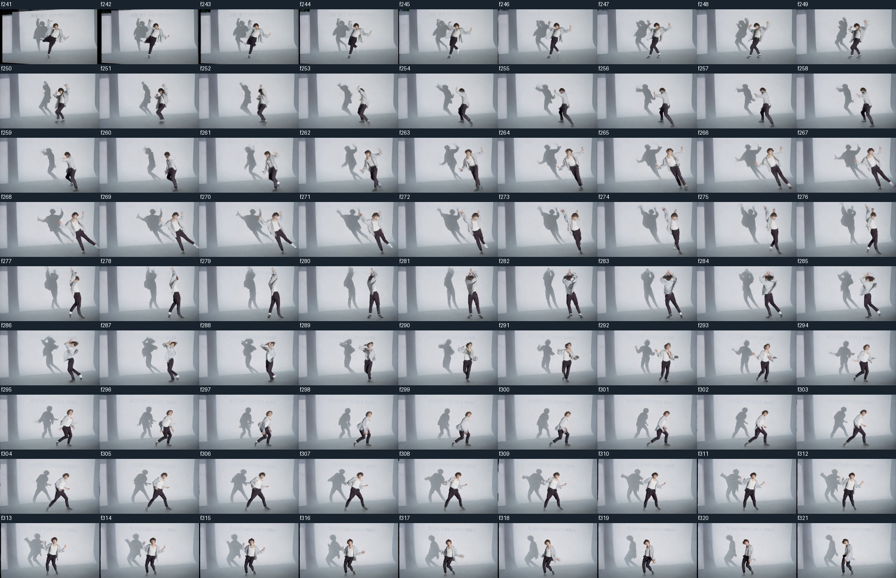 |
21Motion-I2V ForwardWarp α0.35 · 41 帧窗通过前向投影传播源视频的运动信息，再交给 DD 生成目标视角。 | 复杂舞蹈 完整片段已生成 · 画质待验收 帧检查与条件说明使用同一份已核验DD采样结果，恢复每个原窗口自己的因果VAE上下文；完整原生RGB帧按源时间排列，仅去掉重复参考帧与EOF占位，不混合、不平滑、不插帧。没有新增DD采样，不重复计为新论文方法。沿用同一独立目标视频先验修复协议。画质、动作和剩余闪动仍待验收。 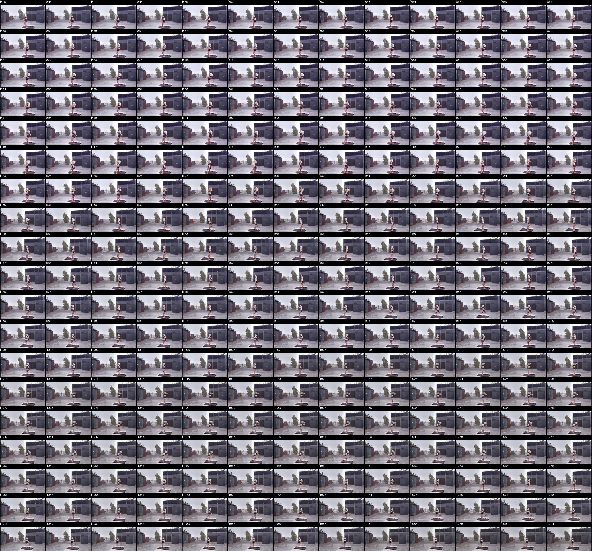 | 简单半身 完整片段已生成 · 画质待验收 帧检查与条件说明使用同一份已核验DD采样结果，恢复每个原窗口自己的因果VAE上下文；完整原生RGB帧按源时间排列，仅去掉重复参考帧与EOF占位，不混合、不平滑、不插帧。没有新增DD采样，不重复计为新论文方法。沿用固定DD81生成参考修复协议。画质、动作和剩余闪动仍待验收。  | 新增Hard案例 完整帧 / EOF 数据已核验 · 未逐帧视觉检查 帧检查与条件说明独立新Hard：f241–f321至真实EOF，81帧@25fps；各方案共用同一已检查Stage2末帧和新case源条件。此结果已完成完整81帧/EOF数据核验，尚未逐帧视觉检查；不代表彩噪、动作、肢体或闪动已通过。 目标视频初始化使用独立DD81近似参考；短窗后续锚帧取其对应时刻。每窗源／相机特征与本窗起点配对。该生成参考不是动作或新视角真值。 未使用旧case视频。最终RGB未做拼贴、平滑、插帧或稳定化，仅作网页显示压缩。 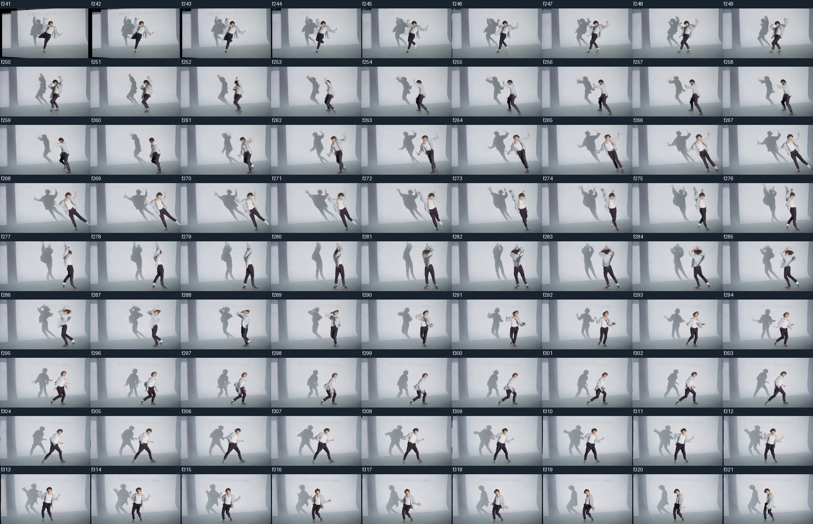 |
22DD + VideoX HED 0.2 · 41 帧窗用 HED 提取较柔和的轮廓，生成参考以约束 DD 的目标视角布局。 | 复杂舞蹈 完整片段已生成 · 画质待验收 帧检查与条件说明使用同一份已核验DD采样结果，恢复每个原窗口自己的因果VAE上下文；完整原生RGB帧按源时间排列，仅去掉重复参考帧与EOF占位，不混合、不平滑、不插帧。没有新增DD采样，不重复计为新论文方法。沿用同一独立目标视频先验修复协议。画质、动作和剩余闪动仍待验收。 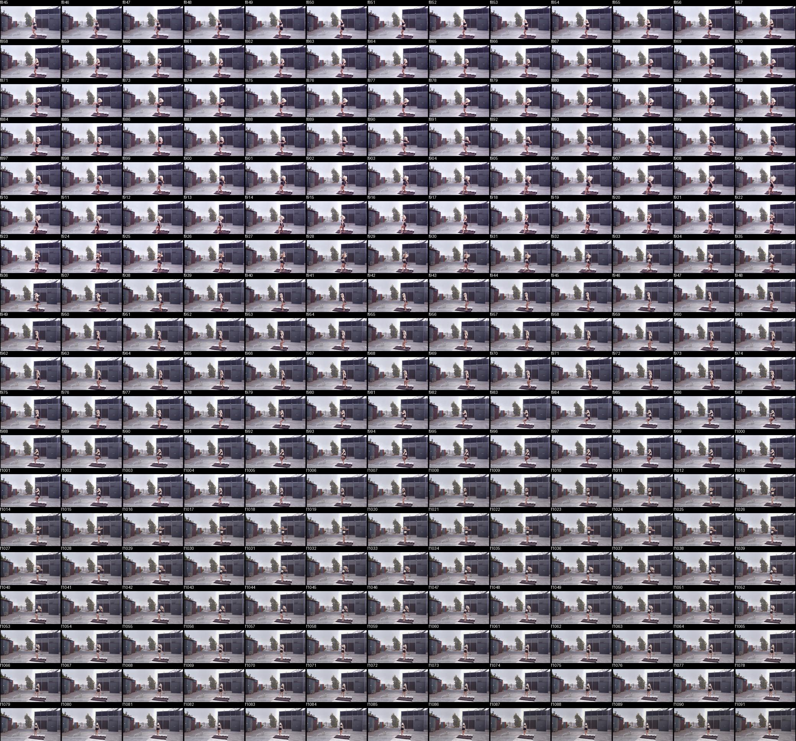 | 简单半身 完整片段已生成 · 画质待验收 帧检查与条件说明使用同一份已核验DD采样结果，恢复每个原窗口自己的因果VAE上下文；完整原生RGB帧按源时间排列，仅去掉重复参考帧与EOF占位，不混合、不平滑、不插帧。没有新增DD采样，不重复计为新论文方法。沿用固定DD81生成参考修复协议。画质、动作和剩余闪动仍待验收。 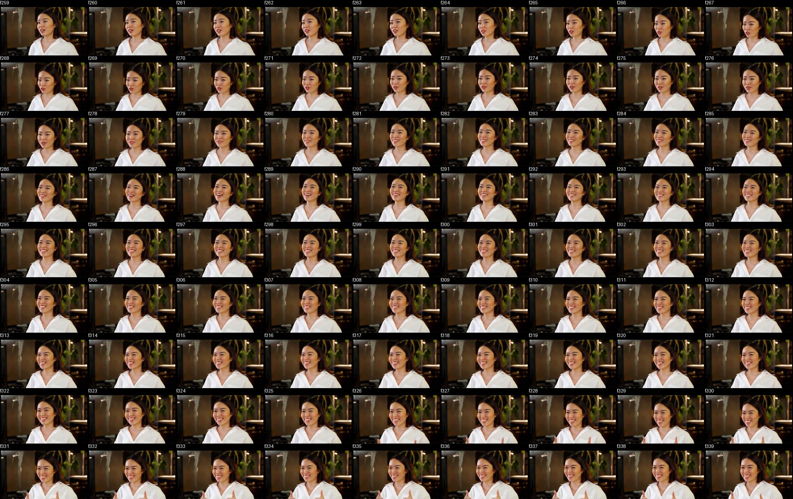 | 新增Hard案例 完整帧 / EOF 数据已核验 · 未逐帧视觉检查 帧检查与条件说明独立新Hard：f241–f321至真实EOF，81帧@25fps；各方案共用同一已检查Stage2末帧和新case源条件。此结果已完成完整81帧/EOF数据核验，尚未逐帧视觉检查；不代表彩噪、动作、肢体或闪动已通过。 目标视频初始化使用独立DD81近似参考；短窗后续锚帧取其对应时刻。每窗源／相机特征与本窗起点配对。该生成参考不是动作或新视角真值。 未使用旧case视频。最终RGB未做拼贴、平滑、插帧或稳定化，仅作网页显示压缩。 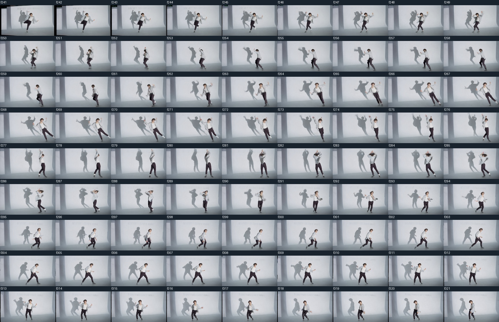 |
23DD + VideoX HED 0.5 · 41 帧窗用 HED 提取较柔和的轮廓，生成参考以约束 DD 的目标视角布局。 | 复杂舞蹈 完整片段已生成 · 画质待验收 帧检查与条件说明使用同一份已核验DD采样结果，恢复每个原窗口自己的因果VAE上下文；完整原生RGB帧按源时间排列，仅去掉重复参考帧与EOF占位，不混合、不平滑、不插帧。没有新增DD采样，不重复计为新论文方法。沿用同一独立目标视频先验修复协议。画质、动作和剩余闪动仍待验收。  | 简单半身 完整片段已生成 · 画质待验收 帧检查与条件说明使用同一份已核验DD采样结果，恢复每个原窗口自己的因果VAE上下文；完整原生RGB帧按源时间排列，仅去掉重复参考帧与EOF占位，不混合、不平滑、不插帧。没有新增DD采样，不重复计为新论文方法。沿用固定DD81生成参考修复协议。画质、动作和剩余闪动仍待验收。 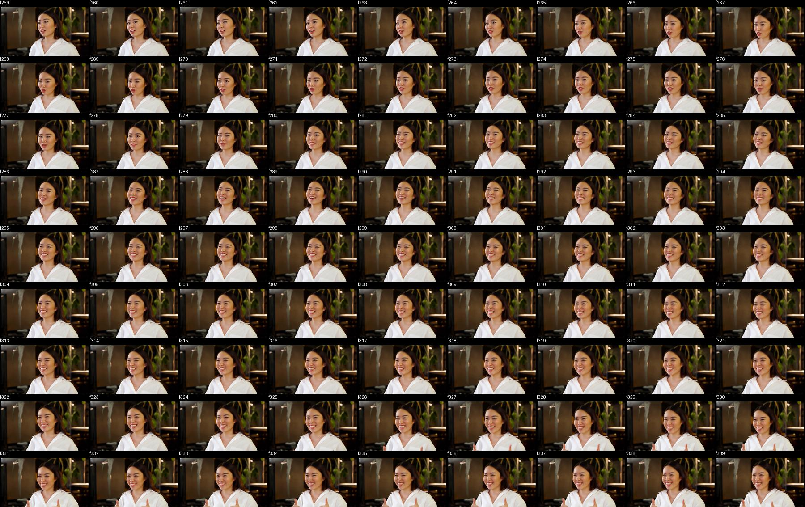 | 新增Hard案例 完整帧 / EOF 数据已核验 · 未逐帧视觉检查 帧检查与条件说明独立新Hard：f241–f321至真实EOF，81帧@25fps；各方案共用同一已检查Stage2末帧和新case源条件。此结果已完成完整81帧/EOF数据核验，尚未逐帧视觉检查；不代表彩噪、动作、肢体或闪动已通过。 目标视频初始化使用独立DD81近似参考；短窗后续锚帧取其对应时刻。每窗源／相机特征与本窗起点配对。该生成参考不是动作或新视角真值。 未使用旧case视频。最终RGB未做拼贴、平滑、插帧或稳定化，仅作网页显示压缩。 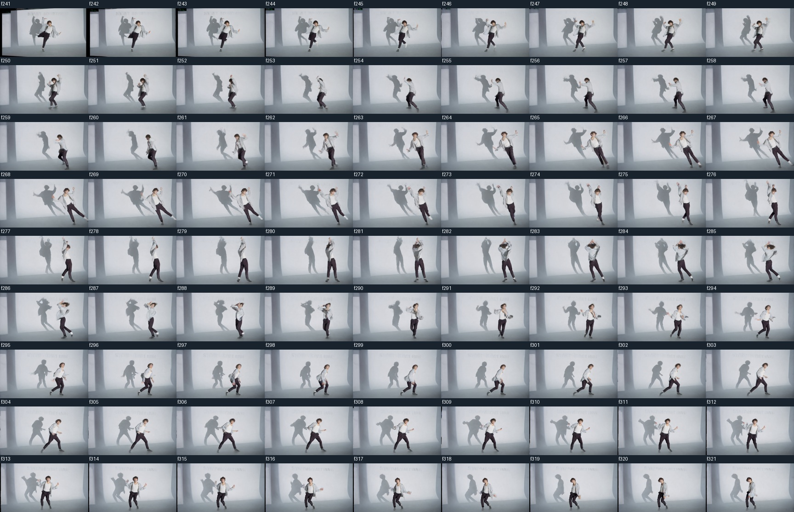 |
24DD + VideoX Canny 0.2 · 41 帧窗先利用 Canny 边缘生成目标视角参考，再用参考引导 DD 的场景轮廓。 | 复杂舞蹈 完整片段已生成 · 画质待验收 帧检查与条件说明使用同一份已核验DD采样结果，恢复每个原窗口自己的因果VAE上下文；完整原生RGB帧按源时间排列，仅去掉重复参考帧与EOF占位，不混合、不平滑、不插帧。没有新增DD采样，不重复计为新论文方法。沿用同一独立目标视频先验修复协议。画质、动作和剩余闪动仍待验收。 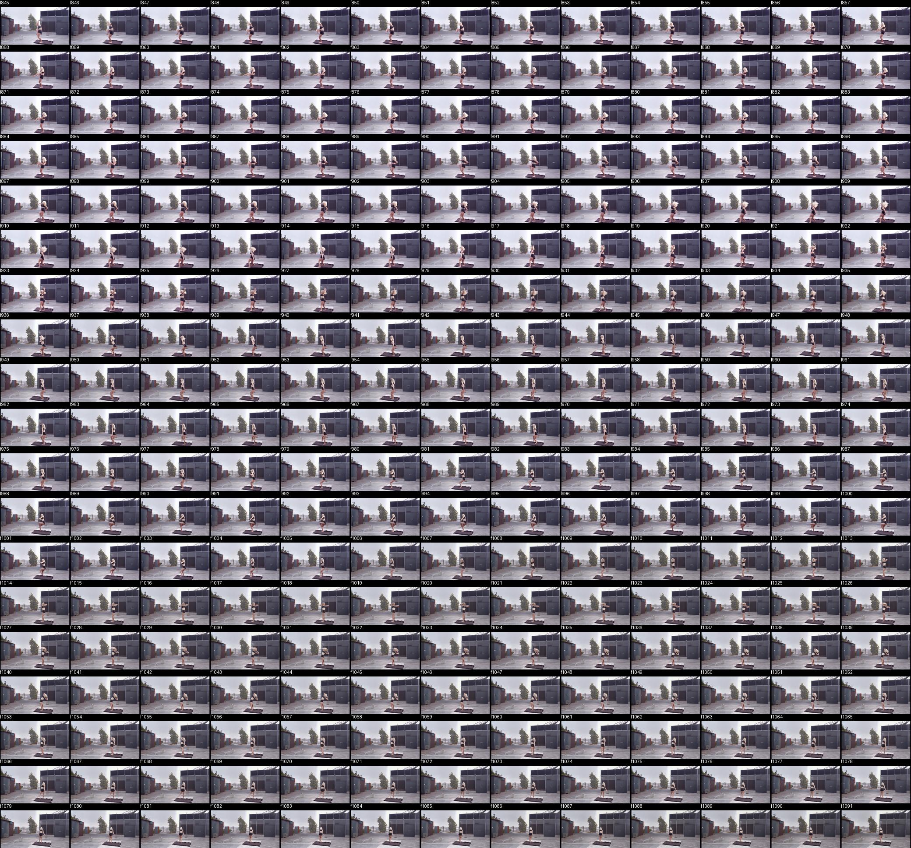 | 简单半身 完整片段已生成 · 画质待验收 帧检查与条件说明使用同一份已核验DD采样结果，恢复每个原窗口自己的因果VAE上下文；完整原生RGB帧按源时间排列，仅去掉重复参考帧与EOF占位，不混合、不平滑、不插帧。没有新增DD采样，不重复计为新论文方法。沿用固定DD81生成参考修复协议。画质、动作和剩余闪动仍待验收。 | 新增Hard案例 完整帧 / EOF 数据已核验 · 未逐帧视觉检查 帧检查与条件说明独立新Hard：f241–f321至真实EOF，81帧@25fps；各方案共用同一已检查Stage2末帧和新case源条件。此结果已完成完整81帧/EOF数据核验，尚未逐帧视觉检查；不代表彩噪、动作、肢体或闪动已通过。 目标视频初始化使用独立DD81近似参考；短窗后续锚帧取其对应时刻。每窗源／相机特征与本窗起点配对。该生成参考不是动作或新视角真值。 未使用旧case视频。最终RGB未做拼贴、平滑、插帧或稳定化，仅作网页显示压缩。 |
25DD + VideoX Tile 0.2 · 41 帧窗以图像局部结构和纹理生成参考，再送入 DD 作为目标视角约束。 | 复杂舞蹈 完整片段已生成 · 画质待验收 帧检查与条件说明使用同一份已核验DD采样结果，恢复每个原窗口自己的因果VAE上下文；完整原生RGB帧按源时间排列，仅去掉重复参考帧与EOF占位，不混合、不平滑、不插帧。没有新增DD采样，不重复计为新论文方法。沿用同一独立目标视频先验修复协议。画质、动作和剩余闪动仍待验收。 | 简单半身 完整片段已生成 · 画质待验收 帧检查与条件说明使用同一份已核验DD采样结果，恢复每个原窗口自己的因果VAE上下文；完整原生RGB帧按源时间排列，仅去掉重复参考帧与EOF占位，不混合、不平滑、不插帧。没有新增DD采样，不重复计为新论文方法。沿用固定DD81生成参考修复协议。画质、动作和剩余闪动仍待验收。  | 新增Hard案例 完整帧 / EOF 数据已核验 · 未逐帧视觉检查 帧检查与条件说明独立新Hard：f241–f321至真实EOF，81帧@25fps；各方案共用同一已检查Stage2末帧和新case源条件。此结果已完成完整81帧/EOF数据核验，尚未逐帧视觉检查；不代表彩噪、动作、肢体或闪动已通过。 目标视频初始化使用独立DD81近似参考；短窗后续锚帧取其对应时刻。每窗源／相机特征与本窗起点配对。该生成参考不是动作或新视角真值。 未使用旧case视频。最终RGB未做拼贴、平滑、插帧或稳定化，仅作网页显示压缩。 |
26DD + 投影关节残差 β0.5 · 41 帧窗把投影后的人体关节信息加入 DD 的相机条件，增强人体动作位置约束。 | 复杂舞蹈 完整片段已生成 · 画质待验收 帧检查与条件说明使用同一份已核验DD采样结果，恢复每个原窗口自己的因果VAE上下文；完整原生RGB帧按源时间排列，仅去掉重复参考帧与EOF占位，不混合、不平滑、不插帧。没有新增DD采样，不重复计为新论文方法。沿用同一独立目标视频先验修复协议。画质、动作和剩余闪动仍待验收。 | 简单半身 完整片段已生成 · 画质待验收 帧检查与条件说明使用同一份已核验DD采样结果，恢复每个原窗口自己的因果VAE上下文；完整原生RGB帧按源时间排列，仅去掉重复参考帧与EOF占位，不混合、不平滑、不插帧。没有新增DD采样，不重复计为新论文方法。沿用固定DD81生成参考修复协议。画质、动作和剩余闪动仍待验收。 | 新增Hard案例 完整片段已生成 · 画质待验收 帧检查与条件说明独立新Hard：f241–f321至真实EOF，81帧@25fps；各方案共用同一已检查Stage2末帧和新case源条件。全部81帧及EOF保持人物／影子／墙面，无普遍彩噪或全场景崩坏。动作总体顺序保留，但与匹配DD41基线视觉接近，未证明改善手脚细节或背景闪动。源骨架已明确选择真实舞者，未使用墙影骨架。 目标视频初始化使用独立DD81近似参考；短窗后续锚帧取其对应时刻。每窗源／相机特征与本窗起点配对。该生成参考不是动作或新视角真值。 未使用旧case视频。最终RGB未做拼贴、平滑、插帧或稳定化，仅作网页显示压缩。 |
27DD + NLF 轮廓 + FlashMotion 0.3 · 41 帧窗把人体轮廓和运动信息加入 DD 条件，帮助保持主体轮廓与运动。 | 复杂舞蹈 完整片段已生成 · 画质待验收 帧检查与条件说明使用同一份已核验DD采样结果，恢复每个原窗口自己的因果VAE上下文；完整原生RGB帧按源时间排列，仅去掉重复参考帧与EOF占位，不混合、不平滑、不插帧。没有新增DD采样，不重复计为新论文方法。沿用同一独立目标视频先验修复协议。画质、动作和剩余闪动仍待验收。 | 简单半身 完整片段已生成 · 画质待验收 帧检查与条件说明使用同一份已核验DD采样结果，恢复每个原窗口自己的因果VAE上下文；完整原生RGB帧按源时间排列，仅去掉重复参考帧与EOF占位，不混合、不平滑、不插帧。没有新增DD采样，不重复计为新论文方法。沿用固定DD81生成参考修复协议。画质、动作和剩余闪动仍待验收。  | 新增Hard案例 完整帧 / EOF 数据已核验 · 未逐帧视觉检查 帧检查与条件说明独立新Hard：f241–f321至真实EOF，81帧@25fps；各方案共用同一已检查Stage2末帧和新case源条件。此结果已完成完整81帧/EOF数据核验，尚未逐帧视觉检查；不代表彩噪、动作、肢体或闪动已通过。 目标视频初始化使用独立DD81近似参考；短窗后续锚帧取其对应时刻。每窗源／相机特征与本窗起点配对。该生成参考不是动作或新视角真值。 未使用旧case视频。最终RGB未做拼贴、平滑、插帧或稳定化，仅作网页显示压缩。 |
28DD + Enhance-A-Video · α0.25利用跨帧注意力增强时序联系，帮助前后帧保留一致的信息。 | 复杂舞蹈 完整片段已生成 · 画质待验收 帧检查与条件说明已恢复每个原窗口的因果VAE解码上下文，完整原生帧按源时间排列；未重新采样或平滑视频。实际DD采样，完整源帧已解码，独立核对模型输入和全部无损帧；247个真实源帧，末尾占位不计数。动作与闪动待验收，额外研究方案不计原14方案通过。合法的零增强窗口单独记录，未强迫修改输出。 | 简单半身 完整片段已生成 · 画质待验收 帧检查与条件说明完整81帧实际DD输出；彩噪、动作与闪动仍分别验收。原生81帧额外对照，不冒充原21/41帧方案。 | 新Hard实际DD推理补测中 |
29DD + Enhance-A-Video · α0.5利用跨帧注意力增强时序联系，帮助前后帧保留一致的信息。 | 复杂舞蹈 完整片段已生成 · 画质待验收 帧检查与条件说明已恢复每个原窗口的因果VAE解码上下文，完整原生帧按源时间排列；未重新采样或平滑视频。实际DD采样，完整源帧已解码，独立核对模型输入和全部无损帧；247个真实源帧，末尾占位不计数。动作与闪动待验收，额外研究方案不计原14方案通过。合法的零增强窗口单独记录，未强迫修改输出。 | 简单半身 完整片段已生成 · 画质待验收 帧检查与条件说明完整81帧实际DD输出；彩噪、动作与闪动仍分别验收。原生81帧额外对照，不冒充原21/41帧方案。 | 新Hard实际DD推理补测中 |
30DD + FreeNoise · 21帧窗在采样前重排相邻窗口的随机噪声，使窗口之间共享部分噪声结构。 | 复杂舞蹈 完整片段已生成 · 画质待验收 帧检查与条件说明已恢复每个原窗口的因果VAE解码上下文，完整原生帧按源时间排列；未重新采样或平滑视频。实际DD采样，完整源帧已解码，独立核对模型输入和全部无损帧；247个真实源帧，末尾占位不计数。动作与闪动待验收，额外研究方案不计原14方案通过。仅移植FreeNoise噪声重排组件，未移植上游时序注意力融合。 | 简单半身 完整片段已生成 · 画质待验收 帧检查与条件说明完整源片段，保留每个 DD 窗口自己的原生因果 VAE 解码；只移除重叠参考帧与明确的 EOF 占位。首窗沿用原 Stage2，后续锚帧和源／相机条件与对应基线协议一致。DD 权重与 LoRA 保留，未平滑、插帧或替换输出像素。复杂案例通常为41帧窗固定当前参考协议，半身案例通常为原生81帧无整段参考；各项推理核验保留实际条件。 | 新Hard实际DD推理补测中 |
32DD + FreeLong · α0.25组合长程和局部时间注意力的频谱信息，在全局一致性与局部运动之间折中。 | 复杂舞蹈 完整片段已生成 · 画质待验收 帧检查与条件说明已恢复每个原窗口的因果VAE解码上下文，完整原生帧按源时间排列；未重新采样或平滑视频。实际DD采样，完整源帧已解码，独立核对模型输入和全部无损帧；247个真实源帧，末尾占位不计数。动作与闪动待验收，额外研究方案不计原14方案通过。FreeLong全局/局部频谱融合移植到DD双流联合时空注意力，非上游原管线。 | 简单半身 画质未通过：背景漂移 帧检查与条件说明完整81帧；未见满屏彩噪，但出现背景绿植漂移、场景一致性变差，画质未通过，不接受为原生DD81的改进。原生81帧额外对照，不冒充原21/41帧方案。 | 新Hard实际DD推理补测中 |
33DD + FreeLong · α0.5增加长程时序注意力的融合比例，观察一致性与细节、运动的取舍。 | 复杂舞蹈 完整片段已生成 · 画质待验收 帧检查与条件说明已恢复每个原窗口的因果VAE解码上下文，完整原生帧按源时间排列；未重新采样或平滑视频。实际DD采样，完整源帧已解码，独立核对模型输入和全部无损帧；247个真实源帧，末尾占位不计数。动作与闪动待验收，额外研究方案不计原14方案通过。FreeLong全局/局部频谱融合移植到DD双流联合时空注意力，非上游原管线。 | 简单半身 完整片段已生成 · 画质待验收 帧检查与条件说明完整源片段，保留每个 DD 窗口自己的原生因果 VAE 解码；只移除重叠参考帧与明确的 EOF 占位。首窗沿用原 Stage2，后续锚帧和源／相机条件与对应基线协议一致。DD 权重与 LoRA 保留，未平滑、插帧或替换输出像素。复杂案例通常为41帧窗固定当前参考协议，半身案例通常为原生81帧无整段参考；各项推理核验保留实际条件。 | 新Hard实际DD推理补测中 |
34DD + STG · 引导0.5比较正常推理与跳过选定层的预测，用二者差异引导 DD；每步需要两次模型推理。 | 复杂舞蹈 完整片段已生成 · 画质待验收 帧检查与条件说明已恢复每个原窗口的因果VAE解码上下文，完整原生帧按源时间排列；未重新采样或平滑视频。实际DD采样，完整源帧已解码，独立核对模型输入和全部无损帧；247个真实源帧，末尾占位不计数。动作与闪动待验收，额外研究方案不计原14方案通过。STG双分支实际100次DD推理/50采样步；比基线多一倍DD推理，非等算力对照。采用DD双流目标块跳层适配，两分支共用DD条件。 | 简单半身 完整片段已生成 · 画质待验收 帧检查与条件说明完整81帧实际DD输出；彩噪、动作与闪动仍分别验收。STG实际100次DD网络推理、50采样步，算力是50次基线的两倍；不依赖视频参考或递归DD末帧。原生81帧额外对照，不冒充原21/41帧方案。 | 新增Hard案例 完整片段已生成 · 画质待验收 帧检查与条件说明独立新Hard：f241–f321至真实EOF，81帧@25fps；各方案共用同一已检查Stage2末帧和新case源条件。全81帧未见满屏彩噪或场景崩坏；尚未确认动作或细节改善。每窗100次DD调用，不能视为与50次基线等算力。 目标视频初始化使用独立DD81近似参考；短窗后续锚帧取其对应时刻。每窗源／相机特征与本窗起点配对。该生成参考不是动作或新视角真值。 未使用旧case视频。最终RGB未做拼贴、平滑、插帧或稳定化，仅作网页显示压缩。 |
35DD + STG · 引导1.0比较正常推理与跳过选定层的预测，用二者差异引导 DD；每步需要两次模型推理。 | 复杂舞蹈 完整片段已生成 · 画质待验收 帧检查与条件说明已恢复每个原窗口的因果VAE解码上下文，完整原生帧按源时间排列；未重新采样或平滑视频。实际DD采样，完整源帧已解码，独立核对模型输入和全部无损帧；247个真实源帧，末尾占位不计数。动作与闪动待验收，额外研究方案不计原14方案通过。STG双分支实际100次DD推理/50采样步；比基线多一倍DD推理，非等算力对照。采用DD双流目标块跳层适配，两分支共用DD条件。 | 简单半身 完整片段已生成 · 画质待验收 帧检查与条件说明完整81帧实际DD输出；彩噪、动作与闪动仍分别验收。STG实际100次DD网络推理、50采样步，算力是50次基线的两倍；不依赖视频参考或递归DD末帧。原生81帧额外对照，不冒充原21/41帧方案。 | 新Hard实际DD推理补测中 |
36DD 原生81帧 · 固定当前目标参考扩大时间上下文，同时保留与短窗实验相同的固定当前时刻目标视频参考。 | 复杂舞蹈 完整片段已生成 · 画质待验收 帧检查与条件说明已恢复每个原窗口的因果VAE解码上下文，完整原生帧按源时间排列；未重新采样或平滑视频。实际DD采样，完整源帧已解码，独立核对模型输入和全部无损帧；247个真实源帧，末尾占位不计数。动作与闪动待验收，额外研究方案不计原14方案通过。原生81帧目标21/源21潜帧，天然匹配训练源时间偏移21，无短窗位置补丁。4窗各50次DD推理；上下文和相应VAE编码、随机噪声尺寸随之改变。 | 简单半身 完整片段已生成 · 画质待验收 帧检查与条件说明正确D完整81帧，使用冻结的同一 DD 原生81帧生成参考，强度0.06。该参考来自 DD C144，复杂案例的固定当前参考来自原有 VideoX 协议。原源视频、Stage2、相机、权重保留；官方 InputVideoEmbedder/add_noise 实际核验，逐帧原生 RGB 保留。 | 新Hard实际DD推理补测中 |
37DD81 + SAGA SG 时间加速度引导 3利用预测的时间加速度调整 DD 的采样更新，尝试抑制不稳定的运动变化。 | 复杂舞蹈 完整片段已生成 · 画质待验收 帧检查与条件说明完整源片段，保留每个 DD 窗口自己的原生因果 VAE 解码；只移除重叠参考帧与明确的 EOF 占位。首窗沿用原 Stage2，后续锚帧和源／相机条件与对应基线协议一致。DD 权重与 LoRA 保留，未平滑、插帧或替换输出像素。复杂案例通常为41帧窗固定当前参考协议，半身案例通常为原生81帧无整段参考；各项推理核验保留实际条件。 | 简单半身 完整片段已生成 · 画质待验收 帧检查与条件说明正确D完整81帧；SAGA作者代码组件移植到DD，保留原素材、相机与首帧。保留基线初始噪声；SG在去噪中对预测干净潜变量施加时间加速度梯度，固定首帧作上下文；50次DD推理及50次潜变量梯度，不对网络反向传播。不是作者原自回归管线；不修改最终视频帧。闪动、动作和场景质量待验收。 | 新增Hard案例 完整片段已生成 · 画质待验收 帧检查与条件说明独立新Hard：f241–f321至真实EOF，81帧@25fps；各方案共用同一已检查Stage2末帧和新case源条件。无整段目标先验、无SAN；全81帧未见满屏彩噪或场景崩坏。引导确实改变潜变量和80帧RGB，但尚未确认可感知的动作或闪动改善。 本行不使用整段目标视频先验，是原生81帧噪声／引导对照。 未使用旧case视频。最终RGB未做拼贴、平滑、插帧或稳定化，仅作网页显示压缩。 |
38DD81 + SAGA SG 时间加速度引导 10利用预测的时间加速度调整 DD 的采样更新，尝试抑制不稳定的运动变化。 | 复杂舞蹈 完整片段已生成 · 画质待验收 帧检查与条件说明完整源片段，保留每个 DD 窗口自己的原生因果 VAE 解码；只移除重叠参考帧与明确的 EOF 占位。首窗沿用原 Stage2，后续锚帧和源／相机条件与对应基线协议一致。DD 权重与 LoRA 保留，未平滑、插帧或替换输出像素。复杂案例通常为41帧窗固定当前参考协议，半身案例通常为原生81帧无整段参考；各项推理核验保留实际条件。 | 简单半身 完整片段已生成 · 画质待验收 帧检查与条件说明正确D完整81帧；SAGA作者代码组件移植到DD，保留原素材、相机与首帧。保留基线初始噪声；SG在去噪中对预测干净潜变量施加时间加速度梯度，固定首帧作上下文；50次DD推理及50次潜变量梯度，不对网络反向传播。不是作者原自回归管线；不修改最终视频帧。闪动、动作和场景质量待验收。 | 新Hard实际DD推理补测中 |
39DD81 + SAGA SAN 结构化噪声 · 单独对照在初始化中引入结构化时间噪声，尝试让相邻时刻的生成更连贯。 | 复杂舞蹈 完整片段已生成 · 画质待验收 帧检查与条件说明完整源片段，保留每个 DD 窗口自己的原生因果 VAE 解码；只移除重叠参考帧与明确的 EOF 占位。首窗沿用原 Stage2，后续锚帧和源／相机条件与对应基线协议一致。DD 权重与 LoRA 保留，未平滑、插帧或替换输出像素。复杂案例通常为41帧窗固定当前参考协议，半身案例通常为原生81帧无整段参考；各项推理核验保留实际条件。 | 简单半身 画质未通过：大面积彩噪 清晰版 · 推理核验 · 查看对应低相关性修复对照 帧检查与条件说明新增SAGA SAN噪声组件在DD移植设置下产生满屏彩噪，画质失败；已停止继续扩展，仅保留失败对照。正确D完整81帧；SAGA作者代码组件移植到DD，保留原素材、相机与首帧。使用作者SAN双AR噪声初始化，实际进入模型的噪声单独核验；本行只测试SAN噪声初始化，无SG梯度。50次DD推理。不是作者原自回归管线；不修改最终视频帧。闪动、动作和场景质量待验收。 | 新Hard实际DD推理补测中 |
40DD81 + SAGA SAN + SG 时间加速度引导 3同时使用结构化时间噪声与时间加速度引导，观察两项约束的联合影响。 | 复杂舞蹈 完整片段已生成 · 画质待验收 帧检查与条件说明完整源片段，保留每个 DD 窗口自己的原生因果 VAE 解码；只移除重叠参考帧与明确的 EOF 占位。首窗沿用原 Stage2，后续锚帧和源／相机条件与对应基线协议一致。DD 权重与 LoRA 保留，未平滑、插帧或替换输出像素。复杂案例通常为41帧窗固定当前参考协议，半身案例通常为原生81帧无整段参考；各项推理核验保留实际条件。 | 简单半身 画质未通过：大面积彩噪 清晰版 · 推理核验 · 查看对应低相关性修复对照 帧检查与条件说明新增SAGA SAN噪声组件在DD移植设置下产生满屏彩噪，画质失败；已停止继续扩展，仅保留失败对照。正确D完整81帧；SAGA作者代码组件移植到DD，保留原素材、相机与首帧。使用作者SAN双AR噪声初始化，实际进入模型的噪声单独核验；SG在去噪中对预测干净潜变量施加时间加速度梯度，固定首帧作上下文；50次DD推理及50次潜变量梯度，不对网络反向传播。不是作者原自回归管线；不修改最终视频帧。闪动、动作和场景质量待验收。 | 新Hard实际DD推理补测中 |
41DD41 去噪强度诊断 0.015降低从参考视频出发的去噪幅度，诊断闪动是否随采样改动量变化。 | 复杂舞蹈 完整片段已生成 · 画质待验收 帧检查与条件说明完整源片段，保留每个 DD 窗口自己的原生因果 VAE 解码；只移除重叠参考帧与明确的 EOF 占位。首窗沿用原 Stage2，后续锚帧和源／相机条件与对应基线协议一致。DD 权重与 LoRA 保留，未平滑、插帧或替换输出像素。复杂案例通常为41帧窗固定当前参考协议，半身案例通常为原生81帧无整段参考；各项推理核验保留实际条件。 | 简单半身 完整片段已生成 · 画质待验收 帧检查与条件说明使用原窗口因果VAE解码；正确D完整81帧；保持固定DD81参考、源素材、相机和噪声一致，只改变去噪强度，每窗仍50次DD推理。用于定位闪动，不计作新的论文方法；不是零DD调用的VAE单独诊断。画质待验收。 | 新Hard实际DD推理补测中 |
42DD41 去噪强度诊断 0.03降低从参考视频出发的去噪幅度，诊断闪动是否随采样改动量变化。 | 复杂舞蹈 完整片段已生成 · 画质待验收 帧检查与条件说明完整源片段，保留每个 DD 窗口自己的原生因果 VAE 解码；只移除重叠参考帧与明确的 EOF 占位。首窗沿用原 Stage2，后续锚帧和源／相机条件与对应基线协议一致。DD 权重与 LoRA 保留，未平滑、插帧或替换输出像素。复杂案例通常为41帧窗固定当前参考协议，半身案例通常为原生81帧无整段参考；各项推理核验保留实际条件。 | 简单半身 完整片段已生成 · 画质待验收 帧检查与条件说明使用原窗口因果VAE解码；正确D完整81帧；保持固定DD81参考、源素材、相机和噪声一致，只改变去噪强度，每窗仍50次DD推理。用于定位闪动，不计作新的论文方法；不是零DD调用的VAE单独诊断。画质待验收。 | 新Hard实际DD推理补测中 |
43DD21 去噪强度诊断 0.015降低从参考视频出发的去噪幅度，诊断闪动是否随采样改动量变化。 | 复杂舞蹈 完整片段已生成 · 画质待验收 帧检查与条件说明完整源片段，保留每个 DD 窗口自己的原生因果 VAE 解码；只移除重叠参考帧与明确的 EOF 占位。首窗沿用原 Stage2，后续锚帧和源／相机条件与对应基线协议一致。DD 权重与 LoRA 保留，未平滑、插帧或替换输出像素。复杂案例通常为41帧窗固定当前参考协议，半身案例通常为原生81帧无整段参考；各项推理核验保留实际条件。 | 简单半身 完整片段已生成 · 画质待验收 帧检查与条件说明使用原窗口因果VAE解码；正确D完整81帧；保持固定DD81参考、源素材、相机和噪声一致，只改变去噪强度，每窗仍50次DD推理。用于定位闪动，不计作新的论文方法；不是零DD调用的VAE单独诊断。画质待验收。 | 新Hard实际DD推理补测中 |
44DD21 去噪强度诊断 0.03降低从参考视频出发的去噪幅度，诊断闪动是否随采样改动量变化。 | 复杂舞蹈 完整片段已生成 · 画质待验收 帧检查与条件说明完整源片段，保留每个 DD 窗口自己的原生因果 VAE 解码；只移除重叠参考帧与明确的 EOF 占位。首窗沿用原 Stage2，后续锚帧和源／相机条件与对应基线协议一致。DD 权重与 LoRA 保留，未平滑、插帧或替换输出像素。复杂案例通常为41帧窗固定当前参考协议，半身案例通常为原生81帧无整段参考；各项推理核验保留实际条件。 | 简单半身 完整片段已生成 · 画质待验收 帧检查与条件说明使用原窗口因果VAE解码；正确D完整81帧；保持固定DD81参考、源素材、相机和噪声一致，只改变去噪强度，每窗仍50次DD推理。用于定位闪动，不计作新的论文方法；不是零DD调用的VAE单独诊断。画质待验收。 | 新Hard实际DD推理补测中 |
45DD41 + 静止背景简洁prompt只在原prompt后增加静止屋顶、固定背景纹理和照明要求，其他输入与DD41匹配基线相同。 | 复杂舞蹈 画质未通过：强化prompt未明显改善背景闪动；静态ROI帧间变化仅下降0.13%。 背景帧间变化较同条件基线 -0.1%；尚未证明闪动改善。 帧检查与条件说明实际 DD 推理，原生窗口因果 VAE 解码；完整真实源帧及 EOF 逐帧核验；没有最终RGB贴图、稳定化、插帧或平滑。 此项仅改prompt；相应基线的完整初始非文本张量、随机噪声及目标参考潜变量均逐字节相同。首窗为原Stage2，后续窗口仍采用原匹配基线的近似锚帧，文字不能硬锁全片Stage2背景。 | 此项仅针对复杂例背景约束，简单D不计重复测试。 查看原生 DD 基线 | 新Hard实际DD推理补测中 |
46DD41 + 静止背景详细prompt用详细prompt强调建筑、地面、树木及曝光固定，同时保留完整舞蹈动作；对照原DD41。 | 复杂舞蹈 画质未通过：详细静止背景prompt未改善闪动；静态ROI帧间变化约增加0.01%，基本不变。 背景帧间变化较同条件基线 +0.0%；尚未证明闪动改善。 帧检查与条件说明实际 DD 推理，原生窗口因果 VAE 解码；完整真实源帧及 EOF 逐帧核验；没有最终RGB贴图、稳定化、插帧或平滑。 此项仅改prompt；相应基线的完整初始非文本张量、随机噪声及目标参考潜变量均逐字节相同。首窗为原Stage2，后续窗口仍采用原匹配基线的近似锚帧，文字不能硬锁全片Stage2背景。 | 此项仅针对复杂例背景约束，简单D不计重复测试。 查看原生 DD 基线 | 新Hard实际DD推理补测中 |
47DD41 + TST + 静止背景详细prompt保持同一TST方法及所有非文本条件，仅替换为详细静止背景prompt。 | 复杂舞蹈 画质未通过：TST配合详细静止背景prompt未改善闪动；相对同一TST旧prompt基线，静态ROI帧间变化约增加0.02%，基本不变。 背景帧间变化较同条件基线 +0.0%；尚未证明闪动改善。 帧检查与条件说明实际 DD 推理，原生窗口因果 VAE 解码；完整真实源帧及 EOF 逐帧核验；没有最终RGB贴图、稳定化、插帧或平滑。 此项仅改prompt；相应基线的完整初始非文本张量、随机噪声及目标参考潜变量均逐字节相同。首窗为原Stage2，后续窗口仍采用原匹配基线的近似锚帧，文字不能硬锁全片Stage2背景。 | 此项仅针对复杂例背景约束，简单D不计重复测试。 查看原生 DD 基线 | 新Hard实际DD推理补测中 |
48DD41 + Stage2背景输入约束原prompt不变，只把生成前参考视频中可确认的静态背景改为Stage2末帧背景，保留保守人物运动区域；最终全部像素仍由DD原生输出。 | 复杂舞蹈 背景变化已降低；窗接缝仍有闪动 清晰版 · 推理核验 · 原初始化参考（生成输入） · 背景约束参考（生成输入） · 查看后续锚帧背景一致版 背景帧间变化较同条件基线 -77.0%；尚未证明闪动改善。 帧检查与条件说明实际 DD 推理，原生窗口因果 VAE 解码；完整真实源帧及 EOF 逐帧核验；没有最终RGB贴图、稳定化、插帧或平滑。 只改变生成前的目标视频初始化背景，原Stage2背景用于保守运动包络外侧，原prompt及源/相机/噪声保留。运动包络内及新显露背景未硬锁；并非把Stage2贴到DD成片上。 | 此项仅针对复杂例背景约束，简单D不计重复测试。 查看原生 DD 基线 | 新Hard实际DD推理补测中 |
49DD81 SAN相关性修复 rho=0.0 SG=0.0作者SAN噪声生成器的rho降至0，作为CPU随机数与布局的独立噪声对照，不声称保留结构化相关性。 | 此项仅针对简单D初始化异常，复杂例不计重复测试。 查看原生 DD 基线 | 简单半身 彩噪已消除 · 动作与细节待验收 帧检查与条件说明实际 DD 推理，原生窗口因果 VAE 解码；完整真实源帧及 EOF 逐帧核验；没有最终RGB贴图、稳定化、插帧或平滑。 此项专门修复D的初始化异常，完整源视频、首帧、相机及权重不变；参数调整与旧失败版分列，不能声称原失败参数已通过。 | 新Hard实际DD推理补测中 |
50DD81 SAN相关性修复 rho=0.3 SG=0.0保留作者双AR噪声形式，将正负相关系数从±0.9降至±0.3；只改相关性参数。 | 此项仅针对简单D初始化异常，复杂例不计重复测试。 查看原生 DD 基线 | 简单半身 彩噪已消除 · 动作与细节待验收 帧检查与条件说明实际 DD 推理，原生窗口因果 VAE 解码；完整真实源帧及 EOF 逐帧核验；没有最终RGB贴图、稳定化、插帧或平滑。 此项专门修复D的初始化异常，完整源视频、首帧、相机及权重不变；参数调整与旧失败版分列，不能声称原失败参数已通过。 | 新Hard实际DD推理补测中 |
51DD81 SAN相关性修复 rho=0.1 SG=0.0保留作者双AR噪声形式，将正负相关系数从±0.9降至±0.1，检查彩噪与时间相关的关系。 | 此项仅针对简单D初始化异常，复杂例不计重复测试。 查看原生 DD 基线 | 简单半身 彩噪已消除 · 动作与细节待验收 帧检查与条件说明实际 DD 推理，原生窗口因果 VAE 解码；完整真实源帧及 EOF 逐帧核验；没有最终RGB贴图、稳定化、插帧或平滑。 此项专门修复D的初始化异常，完整源视频、首帧、相机及权重不变；参数调整与旧失败版分列，不能声称原失败参数已通过。 | 新增Hard案例 画质未通过：前段泛白、亮度漂移及背景重建变化 帧检查与条件说明独立新Hard：f241–f321至真实EOF，81帧@25fps；各方案共用同一已检查Stage2末帧和新case源条件。SAN低rho0.1在新Hard未出现满屏彩噪；前段明显泛白，墙面和亮度随时间变化，末帧仍与初始墙面不同。画质未通过，不能把D例彩噪修复推广成所有案例的画质修复。 本行不使用整段目标视频先验，是原生81帧噪声／引导对照。 未使用旧case视频。最终RGB未做拼贴、平滑、插帧或稳定化，仅作网页显示压缩。 |
52DD81 SAN相关性修复 rho=0.3 SG=3.0低相关SAN rho±0.3加SG3，对照旧rho±0.9组合；SG只改潜变量，不训练网络。 | 此项仅针对简单D初始化异常，复杂例不计重复测试。 查看原生 DD 基线 | 简单半身 彩噪已消除 · 动作与细节待验收 帧检查与条件说明实际 DD 推理，原生窗口因果 VAE 解码；完整真实源帧及 EOF 逐帧核验；没有最终RGB贴图、稳定化、插帧或平滑。 此项专门修复D的初始化异常，完整源视频、首帧、相机及权重不变；参数调整与旧失败版分列，不能声称原失败参数已通过。 | 新增Hard案例 完整帧 / EOF 数据已核验 · 未逐帧视觉检查 帧检查与条件说明独立新Hard：f241–f321至真实EOF，81帧@25fps；各方案共用同一已检查Stage2末帧和新case源条件。此结果已完成完整81帧/EOF数据核验，尚未逐帧视觉检查；不代表彩噪、动作、肢体或闪动已通过。 本行不使用整段目标视频先验，是原生81帧噪声／引导对照。 未使用旧case视频。最终RGB未做拼贴、平滑、插帧或稳定化，仅作网页显示压缩。 |
53DD81 FrameInit 低信号修复 carrier0.99将首帧低频注入载体sigma从0.85改为0.99，减弱色彩偏置；不改变最终视频像素。 | 此项仅针对简单D初始化异常，复杂例不计重复测试。 查看原生 DD 基线 | 简单半身 橙色失真已消除 · 动作与细节待验收 帧检查与条件说明实际 DD 推理，原生窗口因果 VAE 解码；完整真实源帧及 EOF 逐帧核验；没有最终RGB贴图、稳定化、插帧或平滑。 此项专门修复D的初始化异常，完整源视频、首帧、相机及权重不变；参数调整与旧失败版分列，不能声称原失败参数已通过。 | 新Hard实际DD推理补测中 |
54DD41 + Stage2背景与后续锚帧一致在上一项静态背景输入基础上，进一步统一后续窗口锚帧的背景；保留原时间匹配的人物区域，检验窗接缝闪动。首窗条件相同，复用其已核验DD结果。 | 复杂舞蹈 背景变化已降低；窗接缝仍有闪动 背景帧间变化较同条件基线 -42.2%；尚未证明闪动改善。 帧检查与条件说明实际 DD 推理，原生窗口因果 VAE 解码；完整真实源帧及 EOF 逐帧核验；没有最终RGB贴图、稳定化、插帧或平滑。 在上一项静态背景初始化基础上，只进一步统一后续输入锚帧的背景；源/相机/噪声/prompt及人物保留区不变。首41帧条件相同，直接复用上一项已核验DD输出；后6窗新增300次DD调用。保守运动包络内及新显露背景未硬锁；未修改DD成片像素。 | 此项仅针对复杂例背景约束，简单D不计重复测试。 查看原生 DD 基线 | 新Hard实际DD推理补测中 |